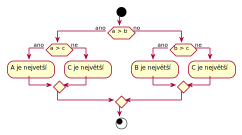
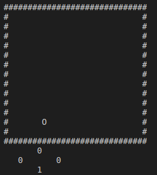

Úvod
Tento text vznikl pro potřeby výuky předmětu Úvod do programování na FEI VŠB-TUO. Slouží k získání přehledu o základních konceptech programovacího jazyka C. Není však plnohodnotnou náhradou za poslechy přednášek a návštěvy cvičení a programovat vás (stejně jako žádný jiný text) nenaučí, toho lze dosáhnout pouze opakovaným zkoušením a řešením různých úloh. Studentům tedy silně doporučujeme, aby přednášky a cvičení navštěvovali a hlavně aby se věnovali programování doma, alespoň několik hodin týdně.
V tomto textu naleznete stručný úvod o programování, překladu a ladění programů, nastavení prostředí k editaci zdrojového kódu, a zejména popis základních konstrukcí jazyka C (proměnné, funkce, podmínky, cykly, struktury, pole, ukazatele atd.) spolu se sadou úloh k procvičení jednotlivých témat. Pomocí ikony vlevo nahoře můžete v textu rychle vyhledávat, pokud potřebujete najít informace o konkrétním tématu.
Několik poznámek k textu:
- Tento text neslouží jako kompletní průvodce jazyka C. Pro takovýto účel lze doporučit některý knižní titul, např. Učebnice jazyka C od Pavla Herouta nebo přímo standard jazyka C99.
- Jelikož je předmět UPR zaměřen na vývoj v operačním systému Linux, tak ukázky kódu a příkazů v terminálu
předpokládají použití tohoto operačního systému (konkrétně distribuce
Ubuntu). - Tento text je psán česky, nicméně primárním jazykem programování (celosvětově) je angličtina. Přeložené pojmy, které mají zavedené anglické názvy, budou v tomto textu uvedeny v závorce kurzívou. Zdrojové kódy silně doporučujeme psát v angličtině.
- V tomto textu najdete různé ukázky C kódu. Některé z nich můžete sami upravovat a dokonce i spustit rovnou v prohlížeči pomocí ikony v pravém horním rohu kódu.
- Pokud v textu najdete gramatickou či faktickou chybu nebo budete mít jakoukoliv zpětnou vazbu k obsahu či formě textu, dejte nám prosím vědět na tento e-mail nebo vytvořte issue na GitHubu.
Autory textu jsou Jan Gaura, Dan Trnka a Kuba Beránek.
Programování
Programování je proces tvorby programu, tj. sady příkazů pro počítač, který slouží k vyřešení nějakého konkrétního problému. Problémem se zde myslí nějaká úloha, kterou chceme vyřešit. Takovéto úlohy obsahují nějaký (počítačem zpracovatelný) vstup, například:
- pohyb myši
- stisk klávesy
- zvuk z mikrofonu
- textový soubor na disku
a k nim určený výstup, například:
- vykreslení obrazce či textu na monitoru
- zapsání dat do souboru na disku
- odeslání informací přes síť
Aby počítačový program korektně řešil nějakou úlohu, tak musí na všechny validní vstupy vrátit správný výstup. Pokud vstup neodpovídá zadání, tak by měl program vrátit rozumnou chybovou hlášku (a ne spadnout anebo ještě hůře pracovat s nevalidními daty). Postup pro řešení nějaké úlohy daný jasně definovanými kroky se nazývá algoritmus. Zápisu (algoritmu) v nějakém konkrétním programovacím jazyce se pak říká implementace.
Zde je příklad úloh, které se během semestru naučíte vyřešit pomocí jazyka C:
Spočítej průměr seznamu čísel.
nebo
Načti obrázek z disku, změň jeho velikost a ulož ho do jiného souboru.
Řešením podobných úloh si osvojíte základy programování a budete poté moct řešit zajímavější úlohy, jako je například tvorba počítačové hry nebo aplikace komunikující přes internet.
Programovací jazyky
Z pohledu počítače je program sekvence příkazů (nazývaných instrukce), které může počítač vykonat k vyřešení nějakého problému. Abychom mohli počítači říct, co má vykonávat, potřebujeme mu příkazy zadat ve formě, které bude rozumět. Ač se to možná nezdá, tak počítače umí vykonávat pouze velmi jednoduché příkazy. V podstatě umí pouze provádět aritmetické a logické operace (sečti/odečti/vynásob/vyděl) s čísly a manipulovat (ukládat, kopírovat, přesouvat) s těmito čísly v paměti. Veškeré složitější úkoly, jako třeba vykreslení obrázku na obrazovku, zapsání textu do dokumentu nebo simulace světa v počítačové hře je výsledkem kombinací tisíců či milionů takovýchto jednoduchých instrukcí.
Zde je ukázka jednoduchého programu, který zdvojnásobí číslo pomocí příkazů MOV a ADD:
MOV EAX, 8
ADD EAX, EAX
Pokud bychom programy psali pomocí těchto jednoduchých příkazů, tak by bylo složité se v nich vyznat,
obzvláště, pokud by obsahovaly stovky, tisíce nebo dokonce miliony takovýchto příkazů.
Ideálně bychom chtěli programy zapisovat v přirozeném jazyce (Vykresli čtverec na obrazovku,
Zapiš text do dokumentu), nicméně tomu počítače nerozumí a je velmi náročné
jej převést na správnou sekvenci příkazů pro počítač, protože jazyky, které používáme,
jsou často nejednoznačné a nemají jednotnou strukturu.
Jako kompromis tak vznikly programovací jazyky, které umožňují zápis programů ve formě, která je lidem srozumitelná, ale zároveň ji lze relativně jednoduše převést na příkazy, které je schopen počítač provést. Převodu programu zapsaného v programovacím jazyce na počítačové instrukce se říká překlad (compilation) a programy, které tento překlad provádějí, se nazývají překladače (compilers). Později si ukážeme, jak takovýto překladač použít k překladu kódu.
Zde je ukázka programu v jazyce C:
while (is_key_pressed(SPACE)) {
move_up(character);
}
I někdo, kdo se s jazykem C nikdy nesetkal, může z tohoto programu zhruba odvodit, co asi dělá, pokud ho přečte jako větu v angličtině. Tento program však může být převeden na stovky až tisíce počítačových instrukcí a z takového množství příkazů už by bylo složité odvodit, k čemu je program určen.
Jazyk C
Existuje nespočet programovacích jazyků, například Python, Java, C#, PHP či Javascript. Každý z nich má své výhody a nevýhody a záleží na konkrétním problému, který je třeba vyřešit, pro zvolení vhodného programovacího jazyka.
V tomto kurzu se budeme zabývat pouze programovacím jazykem C. Tento jazyk vytvořili Dennis Ritchie a Ken Thompson v laboratořích firmy Bell v roce 1972, tedy již před téměř 50 lety, a za tu dobu nedočkal mnoha výrazných změn.
I když pro něj v dnešní době asi nenaleznete mnoho pracovních nabídek a není primární volbou pro tvorbu webových či mobilních aplikací, vyplatí se mu rozumět a umět ho používat, a to hned z několika důvodů:
- Jazyk C lze použít na téměř všech existujících platformách a je tak velmi univerzálním jazykem. Téměř veškerý existující software obsahuje kusy kódu v jazyce C. Operační systémy (Linux, OS X, Windows, Android, iOS), prohlížeče (Chrome, Firefox, Edge), multimediální programy (Photoshop, Powerpoint, Word, BitTorrent), hry (World of Warcraft, Quake, Doom, Call of Duty, League of Legends, DOTA 2, Fortnite), vestavěná zařízení (mikročipy, pračky, řídící jednotky vesmírných letadel nebo aut). Všechny tyto věci jsou buď z části anebo zcela poháněné jazykem C.
- Je to jednoduchý jazyk, který neobsahuje velké množství funkcionalit, které lze naleznout ve většině modernějších jazyků. Díky tomu se dá naučit za jeden semestr.
- Jeho úroveň abstrakce není o mnoho výše než základní počítačové instrukce. Při výuce C tak lze zároveň pochopit, jak funguje počítač a operační systém. Díky tomu lze také při správném zacházení psát velmi efektivní programy (to ale nicméně není obsahem tohoto kurzu).
- Syntaxe (způsob zápisu) jazyka C ovlivnila velké množství jazyků, které vznikly po něm. Jakmile se ji naučíte, tak budete schopni rozumět syntaxi většiny současných nejpoužívanějších jazyků (C++, C#, Java, Kotlin, Javascript, PHP, Rust, ...).
Jazyk C má samozřejmě také řadu nevýhod. Vzhledem k jeho stáří a omezené sadě funkcionalit je často značně pracnější a zdlouhavější pomocí něho dosáhnout stejného výsledku než u modernějších programovacích jazyků. Nevede také programátory za ručičku – při psaní programu v jazyce C je velmi jednoduché udělat chybu, která může způsobit v lepším případě pád programu, v horším případě může běžící program poškodit tak, že začne vydávat chybný výstup nebo se začně chovat nepředvídatelně.
Tyto chyby se můžou projevit jen někdy, nebo jenom na určité kombinaci hardwaru či operačního systému, a programátor na ně není často nijak upozorněn a musí je najít ručně zkoumáním zdrojového kódu. Podobný typ chyb je také nejčastějším zdrojem bezpečnostních děr ve všech možných softwarech, které (jak už víme) téměř vždy obsahují alespoň část kódu napsaného v "Céčku".
Zde je vybraný seznam populárních programů napsaných v jazyce C, které jsou open-source, takže si jejich zdrojový kód můžete prohlédnout a v případě potřeby i modifikovat:
- Linux (operační systém)
- Quake III (počítačová hra)
- git (verzovací systém)
- PHP (překladač/interpret jazyka PHP)
- OBS Studio (streamovací software)
Paměť
Počítače si potřebují ukládat (mezi)výsledky výpočtů do paměti, aby je později mohly opět načíst a pracovat s nimi. Je mnoho typů paměti, s kterými lze pracovat, nejběžněji se setkáme s tzv. operační pamětí (RAM). RAM znamená Random-access Memory, tedy paměť s náhodným přístupem. To znamená, že počítač může do paměti šahat v libovolném pořadí a na libovolném místě, kde je to potřeba.
Reprezentace hodnot v paměti
Počítačová paměť uchovává informace v buňkách, které obsahují jedno číslo, které může obsahovat 256 různých hodnot. To vychází z toho, že informace je reprezentována bity, jednotkou informací, která může nabývat pouze dvě hodnoty - pravda (true) nebo nepravda (false). Každá buňka paměti obsahuje jeden byte, neboli 8 bitů.
Pracuje se zde s dvojkovou (binární) soustavou, pokud tedy máme k dispozici n bitů, tak pomocí nich můžeme reprezentovat \( 2^n \) hodnot. Např. s dvěma bity můžeme reprezentovat 4 různé hodnoty (00, 01, 10, 11). Více o binární soustavě a bytech se dozvíte v předmětu Základy číslicových systémů (ZDS).
I když paměť vždy obsahuje čísla v dvojkové soustavě, je důležité si uvědomit, že význam těmto číslům přiřazujeme my, tedy programátoři a uživatelé počítače. Pokud je v paměti číslo 65, tak může reprezentovat například:
- počet získaných bodů studenta (interpretujeme jej jako celé nezáporné číslo)
- písmeno
Av nějakém dokumentu (interpretujeme jej jako znak v kódování ASCII) - tmavě šedý pixel (interpretujeme jej jako barvu)
Hodnotu 255 uloženou v bytu paměti můžeme například vnímat jako celé nezáporné číslo (unsigned integer) 255, anebo jako celé číslo se znaménkem (signed integer) -1 v dvojkovém doplňku.
Čísla v paměti sama o sobě nemají žádný význam, záleží pouze na tom, jak je my, a obzvláště naše programy, interpretují a jaké operace nad nimi provádějí.
Adresování paměti
Abychom se mohli odkazovat na hodnoty v paměti, tak musíme mít možnost rozlišit jednotlivé buňky od sebe. Toho dosáhneme pomocí adresy. Paměť je adresována tak, že každá paměťová buňka (každý byte) má číselnou adresu od 0 do velikosti paměti (nevčetně). Velmi zjednodušeně řečeno, pokud máte RAM paměť o velikosti 8 GiB (8589934592 "bajtů"), tak můžete adresovat buňky od 0 do 85899345911.
1Programy běžně nemají přístup k celé paměti počítače (mimo jiné z bezpečnostních důvodů). Váš operační systém používá tzv. virtuální paměť, která každému běžícímu programu přiděluje určité rozsahy paměti, s kterými může pracovat. Více se dozvíte v předmětu Operační systémy.
Pokud byste programovali počítač přímo pomocí instrukcí, tak mu můžete dát například instrukci
Nastav byte na adrese 58 na hodnotu 5 nebo Přečti 4 byty začínající na adrese 1028.
Při programování v C ovšem často budou adresy skryté na pozadí a bude se o ně starat překladač,
my se budeme na konkrétní úsek paměti obvykle odkazovat jménem, které mu přiřadíme.
Nastavení prostředí
Abyste mohli programovat v C, musíte si nainstalovat, nakonfigurovat a naučit se používat sadu programů. V této kapitole je stručný popis toho, jak si nastavit operační systém Linux, textový editor k psaní programů, překladač pro překlad z jazyka C do spustitelného souboru a také jak řešit chyby při psaní programů.
Linux
Jak už bylo zmíněno v úvodu, v UPR budeme psát a spouštět programy v operačním systém Linux. Je tak nutné, abyste si na svém počítači tento operační systém zprovoznili.
Pokud používáte operační systém OS X, tak teoreticky Linux instalovat nemusíte, stačí si nastavit
překladač gcc.
Pokud používáte operační systém Windows, tak pro použití Linuxu můžete využít jeden z následujících tří možností.
Windows Subsystem for Linux (doporučeno)
WSL je systém, který umožňuje nainstalovat Linux pod operačním systémem Windows. Jakmile jej
nainstalujete, budete mít k dispozici Linuxový terminál (bash) a budete moct používat překladač
gcc a editor Visual Studio Code. Výhoda tohoto řešení je, že
pro použití Linuxu nemusíte restartovat počítač ani zapínat virtuální stroj, Linux je v podstatě
jenom "další aplikace" pod Windows.
Návod pro zprovoznění WSL spolu s prostředím pro vývoj v jazyce C naleznete
zde. Při instalaci WSL používejte distribuci
Ubuntu 20.04.
Virtualizovaný Linux
Linux můžete také používat ve virtualizované podobě pomocí
virtuálního stroje. Připravili jsme pro
vás tzv. obraz virtuálního stroje, který obsahuje již nastavený Linux, konkrétně Ubuntu 20.04,
se vším potřebným pro předmět UPR.
Abyste jej mohli použít, tak si nejprve musíte nainstalovat virtualizační program VirtualBox. Poté si předpřipravený obraz stáhněte, otevřete ho ve VirtualBoxu a potvrďte import s výchozím nastavením.
Virtuální počítač poté bude možné spustit z programu VirtualBox. Uživatelské jméno i heslo je
student.
Nativní instalace Linuxu
Nejspolehlivější variantou použití Linuxu je nainstalovat si ho přímo "na železo", tj. bez
virtualizace. Můžete jej například nastavit v režimu
dual boot, kdy se při
startu počítače můžete rozhodnout, zdali se nabootuje do Windows (či jiného operačního systému)
nebo do Linuxu. Pokud jste s Linuxem nikdy nepracovali, tak doporučujeme použít Linuxovou
distribuci Ubuntu ve verzi 20.04.
Vývojové prostředí
Abychom mohli přeložit a spustit nějaký program, musíme ho obvykle nejprve zapsat do
jednoho nebo více souborů ve formě tzv. zdrojového kódu (source code). K usnadnění tohoto procesu
existují textové editory a vývojová prostředí jako například MS Visual Studio, QtCreator, JetBrains CLion,
CodeBlocks, Visual Studio Code, vim, emacs apod. Tyto programy usnadňují psaní kódu pomocí zvýrazňování
syntaxe, automatizace překladu, spouštění a testování programů a také správy projektů.
Na cvičeních UPR budeme používat editor Visual Studio Code, který je
dostupný zdarma. Níže je stručný návod k jeho použití. Při
programování se hodí detailně znát a efektivně využívat editor, který používáte, ale pro začátek
nám budou stačit naprosté základy.
Instalace potřebných rozšíření (pomocí terminálu)
VSCode podporuje programovací jazyky pomocí rozšíření, po první instalaci VSCode tak nejprve musíme nainstalovat potřebná rozšíření pro jazyk C. V terminálu spusťte tyto příkazy:
$ code --install-extension ms-vscode.cpptools
Návod pro práci s terminálem na Linuxu můžete najít např. zde. Tahák pro příkazy terminálu najdete zde.
Instalace potřebných rozšíření (pomocí uživatelského rozhraní)
- Otevřete obrazovku rozšíření (
Ctrl+Shift+Xnebo spusťte akciInstall Extensions) - Vyhledejte rozšíření C/C++ a nainstalujte ho
Ukázka nastavení projektu
Jako vzorový projekt můžete použít tuto šablonu.

Užitečné zkratky
- Spustit program -
F5 - Naformátovat kód -
Ctrl + Shift + I - Zobrazit vyhledávač akcí -
Ctrl + Shift + P
Překlad programu
Pro překlad programu z jazyka C do spustitelného (executable) souboru budeme používat jiný program, kterému se říká překladač. Překladačů jazyka C existuje celá řada, my budeme využívat asi nejpoužívanější překladač pro Linuxové systémy s názvem GCC (GNU Compiler Collection).
Překladač gcc, spolu s dalšími potřebnými nástroji na Ubuntu můžete nainstalovat následujícím
příkazem:
sudo apt install build-essential
Překlad prvního programu
Ještě než si ukážeme, jak vlastně programovací jazyk C funguje, tak zkusíme přeložit velmi jednoduchý
C program do spustitelného souboru a spustit jej.
Vytvořte soubor s názvem main.c a nakopírujte do něj následující C kód (později si vysvětlíme,
jak tento kód funguje):
#include <stdio.h>
int main() {
printf("Hello world!\n");
return 0;
}
Tento program se nazývá
Hello world, jelikož tento text vypíše na obrazovku. Podobný jednoduchý program je obvykle tím prvním, co programátor v nějakém novém programovacím jazyce vytvoří.
Nyní otevřete terminál (Ctrl + Alt + T v Ubuntu) ve složce s tímto souborem, spusťte program
gcc a předejte mu cestu k tomuto souboru:
$ gcc main.c -o program
Tímto příkazem řeknete "Gécécéčku", aby přeložil zdrojový soubor main.c a uložil výsledný spustitelný
soubor do souboru program. Pokud byste přepínač -o <nazev souboru> nepoužili, tak se vytvoří spustitelný
soubor s názvem a.out.
Na Windowsu spustitelné soubory mají obvykle příponu
.exe, na Linuxu to však není běžnou praxí a spustitelné soubory typicky žádnou příponu nemají.
Pokud chcete nyní program spustit, stačí v terminálu zadat (relativní) cestu k danému spustitelnému souboru.
$ ./program
Hello world!
Program by měl na výstup vytisknout text Hello world!.
Tipy pro práci s příkazovou řádkou
- Obvykle budete chtít po změně v programu provést překlad a pak program spustit. Abyste to provedli
v jednom terminálovém příkazu, můžete tyto dva příkazy spojit pomocí
&&:
Pokud překlad proběhne úspěšně, tak operátor$ gcc main.c -o main && ./main&&zajistí spuštění následujícího příkazu. - Pokud nechcete příkazy v terminálu psát neustále dokola, šipkou nahoru (↑) můžete vyvolat nedávno spuštěné příkazy v terminálu.
Pro představu je k dispozici ješte shrnující video:
Jak překlad probíhá?
Překlad programů probíhá ve dvou hlavních fázích: překlad (translation) a linkování (linking). Dohromady se oboum těmto krokům také říká kompilace (compilation).
Při překladu překladač vezme každý C zdrojový soubor, který mu předložíme, a samostatně jej přeloží do tzv. objektového souboru (object file). Takovýto soubor obsahuje již přeložené instrukce pro procesor, ale není sám o sobě spustitelný, tj. nejedná se o program, ale pouze o přeložený binární kód.
Jakmile jsou všechny zdrojové soubory přeloženy do objektových souborů, tak přichází na řadu další program, tzv. linker, který tyto objektové soubory spojí dohromady, propojí je dle potřeby, případně k nim připojí externí knihovny a na konci vytvoří finální spustitelný soubor, který lze poté spustit.
Když použijete program gcc způsobem, jaký jsme si ukázali výše, tak se na pozadí spustí překladač
a poté i linker a oba dva tyto kroky se tak provedou automaticky. Je ale možné provést je i separátně:
$ gcc -c main.c # vytvoří objektový soubor main.o
$ gcc main.o -o main # slinkování souboru main.o
Ladění programů
Tato sekce slouží k řešení často se vyskytujících problémů při programování v C. Pokud váš program padá při běhu nebo se nechová tak, jak má, tak v něm nejspíše máte nějakou chybu (tzv. bug). Proces hledání chyby, která způsobuje pád nebo špatné chování programu se pak nazývá ladění (debugging).
Chyby při překladu programu
Pokud váš program nelze přeložit a překladač vypisuje nějakou chybovou hlášku, tak máte v zápisu programu nějakou chybu, obvykle v syntaxi, tedy zápisu kódu. Je dobré si danou chybovou hlášku pořádně přečíst, obvykle se odkazuje na relativně přesné místo, kde máte kód špatně, a někdy dokonce i nabízí řešení, jak problém vyřešit.
Při překladu můžete dostat například následující chybovou hlášku:
main.c: In function ‘main’:
main.c:2:2: error: ‘a’ undeclared (first use in this function)
2 | a = 0;
Tato konkrétní chyba byla způsobena tím, že byla použitá proměnná bez její předchozí deklarace. Pokud
chybě nerozumíte, zkuste ji nejprve vygooglit, ideálně pouze část, která není konkrétně závislá na
podobě vašeho projektu. Nemá cenu googlit main.c:2:2, protože tento text je závislý na tom, jak jste
si pojmenovali své soubory, ostatní programátoři nejspíše mají jiné názvy souborů. V případě této chyby
by tedy bylo lepší googlit text error: undeclared (first use in this function).
Může se stát, že překladač vypíše více chybových hlášek zároveň, i když chyba v programu je pouze jedna. Zkuste scrollovat výstupem hlášek nahoru, abyste zjistili, která chyba byla vypsána jako první, zbytek výpisu může být "planý poplach".
Pokud se vám nedaří chybu vygooglit, tak kontaktujte svého cvičícího.
Při překladu můžete použít dodatečné přepínače, při jejichž použití vydá překladač více varování o možných problémových místech ve vašem kódu:
$ gcc -Wall -Wextra -pedantic main.c -o program
Chyby při běhu programu
Pokud váš program padá při běhu, můžete zkusit následující způsoby ladění:
Address sanitizer
Tento nástroj modifikuje váš program tak, aby dokázal detekovat značné množství chyb při jeho běhu, a pokud nějakou chybu najde, tak váš program okamžitě ukončí a popíše, k jakému problému došlo.
$ gcc -g -fsanitize=address main.c -o program
Jakmile takto přeložený program spustíte a dojde k nějaké chybě, tak bude její popis vypsán na výstup.
Pokud se chyba opraví těsně po svém vzniku, je to mnohem jednodušší, než když se chyba projeví až později v úplně jiné části kódu. Doporučujeme tak vždy používat Address Sanitizer při vývoji programů v C. Ušetříte si tak spoustu času a námahy při ladění chyb.
Logování
Jedním z nejjednodušších způsobů, jak se dozvědět, co se v programu děje, je jednoduše tisknout hodnoty zajímavých proměnných na výstup programu. Pokud přidáte takovýto výstup na různá místa v kódu, můžete pak podle výstupu zpětně rekonstruovat, co se při běhu programu dělo.
Krokování
Pro interaktivnější zkoumání chování programů je možné je tzv. krokovat. K tomu je potřeba nástroj, který umí program pozastavit při jeho běhu a zobrazit uživateli, co se v něm děje. Takovéto nástroje se nazývají debuggery. Při krokování se program zastaví na určitém místě (řádku) v kódu, a programátor pak může zkoumat hodnoty proměnných a spouštět program řádek po řádku.
Pro vás je nejjednodušší použít krokování integrované ve VSCode:
- Klikněte na sloupeček vlevo od čísla řádku, na kterém chcete, aby se program zastavil. Objeví se tam červené kolečko (tzv. breakpoint).
- Spusťte program s laděním (
F5). Program by se na řádku s breakpointem měl zastavit. - Ve sloupci
Variablesv levé části VSCode můžete prozkoumat hodnoty proměnných. - Pomocí příkazu
Step Over(F10) program vykoná následující řádek a poté se opět zastaví. Pokud nechcete přeskakovat volání funkcí, použijteStep Into(F11).
VSCode používá pro ladění vašeho programu debugger
gdb. Pokud ho chcete použít manuálně, návod můžete najít například zde.
Programování v C
V této kapitole naleznete popis základních konstrukcí jazyka C, které jsou základními stavebními kameny pro tvorbu programů. Ke každému tématu je k dispozici také úloh. Pokud úlohy zvládnete vypracovat, tak budete mít jistotu, že jste dané téma pochopili a můžete se posunout dále. Pokud nezvládnete úlohy splnit, tak můžete mít s dalšími koncepty problém. Pokud nebudete stíhat, tak kontaktujte svého cvičícího.
Před přečtením této kapitoly si přečtěte sekci o paměti.
Zde je přibližný seznam témat, které si během semestru ukážeme. Pořadí témat probíraných na cvičení a přednáškách se může od tohoto seznamu lišit, tento text je určen spíše jako "kuchařka", ve které se můžete k jednotlivým tématům vracet, abyste si je připomněli. Text je nicméně psaný tak, aby se dal zhruba číst v uvedeném pořadí bez toho, aby používal pojmy, které zatím nebyly vysvětleny.
Základní témata:
- Úvod - základní syntaxe a komentáře
- Příkazy a výrazy - jak provádět výpočty
- Proměnné - jak něco uložit a načíst z paměti paměti
- Datové typy - jak pracovat s daty v paměti
- Řízení toku - jak se rozhodovat a provádět akce opakovaně
- Funkce - jak opakovaně využít a parametrizovat opakující se kód
- Ukazatele - jak sdílet data v paměti a pracovat s adresami
- Pole - jak jednotně pracovat s velkým množstvím dat
- Text - jak v programech reprezentovat text
- Struktury - jak seskupit data do logicky souvisejících celků
- Soubory - jak číst a zapisovat soubory
- Modularizace - jak rozdělit program do více zdrojových souborů
- Knihovny - jak využít existující kód od jiných programátorů
Všechny tyto koncepty jsou velmi univerzální a v tzv. imperativních programovacích jazycích jsou v podstatě všudypřítomné. Jakmile se je jednou naučíte, tak je budete moct využívat téměř v libovolném populárním programovacím jazyku (Java, C#, Kotlin, Python, PHP, Javascript, Rust, C++ atd.).
Navazující témata:
- TGA - jednoduchý formát pro reprezentaci obrázků na disku
- SDL - knihovna pro tvorbu grafických aplikací a her
Základy syntaxe
C je (programovací) jazyk a jako každý jazyk má svá pravidla, které je nutno dodržovat.
Například v češtině musíme dodržovat určitá pravidla a zvyklosti, abychom byli schopni výsledný
text pochopit. Věty jsme, M y máma, táta a nebo .o dku d! ty z, jsi nedávají smysl,
protože obsahují interpunkční znaménka na špatných místech, větné členy jsou ve špatném pořadí
a některá slova obsahují mezery na místech, kam nepatří. Stejně tak v jazyce C můžete velmi jednoduše
napsat program, kterému překladač nebude rozumět a překlad poté skončí se
syntaktickou chybou (syntax error). Na syntax C si musíte postupně zvyknout, poté už podobné chyby
budete schopni snadno vyřešit.
Zde je asi nejkratší možný program v jazyce C:
int main() {
return 0;
}
V programu výše je pouze funkce s názvem main. Funkce si popíšeme později, prozatím
budeme psát kód vždy do funkce main (před return 0;). Jednotlivé prvky programu si postupně vysvětlíme
v následujících sekcích, prozatím si však všimněte, že bílé znaky (whitespace)1 jsou obvykle
překladačem ignorovány. Například
1Bílé znaky jsou (neviditelné) znaky, které reprezentují mezery v textu, tj. odřádkování, mezerník, tabulátor atd.
int
main() {
return 0;
}
reprezentuje úplně stejný program. Nicméně asi sami uznáte, že pokud bychom s bílými znaky nakládali
takto nerozvážně, tak by zdrojový kód byl pro lidi špatně čitelný. Proto doporučujeme formátování provádět
automaticky ve VSCode pomocí zkratky Ctrl + Shift + I, ať nad ním nemusíte přemýšlet.
Bílé znaky nicméně nejsou ignorovány úplně na všech místech. Například v řetězcích
jsou bílé znaky brány jako součást textu. Nemůžete také rozdělovat mezerami názvy (např. in t nebo
ma in z programu výše by způsobily chybu při překladu).
Komentáře
Abychom mohli v následujících sekcích popisovat kusy kódu, ukážeme si teď komentáře. Jedná se o text ve zdrojovém kódu, který je určen pro programátory, ne pro překladač, který je zcela ignoruje. Bez komentářů bychom nemohli do zdrojového kódu dodávat poznámky, protože překladač by jinak měl snahu je interpretovat jako C kód. Komentáře v kódu obvykle poznáte snadno, protože je váš editor bude vykreslovat jinou barvou než zbytek kódu.
V C existují dva typy komentářů:
- Řádkové komentáře - pokud do kódu napíšete
//, tak vše za těmito lomítky až do konce řádku se bude brát jako komentář.// komentář 1 int main() { // komentář 2 return 0; // komentář 3 } - Blokové komenáře - pokud do kódu napíšete
/*, tak bude jako komentář označen všechen následující text, dokud nedojde k ukončení komentáře pomocí*/.int main() { /* zde je komentář zde taky a tady taky */ return 0; }
Ze začátku je asi jednodušší používat řádkové komentáře, ve VSCode můžete použít klávesovou zkratku
Ctrl + / pro zakomentování/odkomentování řádku kódu. Pokud vám přijde nějaký kus kódu komplikovaný,
tak si k němu zkuste dopsat komentář, který vysvětlí, co má daný kód dělat. Porozumíte tak kódu snáž,
až se k němu např. za měsíc vrátíte.
Klíčová slova
Klíčová slova (keywords) jsou vestavěné názvy, kterým překladač přiřazuje speciální
význam. V textovém editoru je typicky poznáte tak, že budou zabarvená jinou barvou. Například v
tomto kódu jsou int a return klíčová slova:
int main() {
return 0;
}
Během semestru se postupně naučíte, k čemu se jednotlivá klíčová slova používají. Jejich kompletní seznam můžete najít například zde.
Speciální znaky
Při programování (jak už v C, tak i v jiných jazycích) budete používat spousty symbolů, které běžně
asi často nevyužíváte (například [, ], {, }, <, >, =, %, #, &, *, ;, \,
", '). Obzvláště pokud pro programování budete používat českou klávesnici, je dobré si ze začátku
najít nějaký tahák (např. tento),
abyste nemuseli pokaždé zdlouhavě vzpomínat, na které klávese se daný znak nachází.
Formátování kódu
Už víme, že překladač ignoruje bílé znaky a celkové formátování kódu. Nicméně programátorům obvykle velmi záleží na tom, jaké má kód odsazení, zarovnání, závorkování atd. Existuje mnoho stylů, pomocí kterých můžete kód formátovat. Například programátoři se dokážou běžně pohádat o tom, zda složené závorky na začátku bloku psát na stejném:
if (...) {
}
while (...) {
}
nebo novém řádku:
if (...)
{
}
while (...)
{
}
Jaký styl formátování použijete, je na vás, nicméně obecně platným pravidlem je, že byste se měli držet ve svých programech jednotného stylu a nemíchat více stylů dohromady.
Vykonávání programů
Jak už víme, programy jsou sekvence příkazů pro počítač, který je provádí
instrukci po instrukci (resp. řádek po řádku). Jakmile počítač vykoná jeden řádek vašeho programu, tak skočí
na řádek níže, dokud nedojde na konec programu. Aby počítač věděl, kterou instrukci má provést
jako první, tak mu musíme říct, kde má začít. K tomu přesně slouží funkce (pojmenovaný
blok kódu) se speciálním názvem main:
int main() {
// ZDE
return 0;
}
Výše zmíněný program se po překladu a spuštění začne vykonávat na prvním řádku
funkce main, a jakmile provede všechny řádky, tak program skončí. Tento program je
v podstatě prázdný, takže se pouze zapne a vypne. Prozatím budeme veškerý kód psát dovnitř funkce
main, mezi složené závorky ({, }) a před řádek return 0; (tedy na místo komentáře ZDE).
Později si vysvětlíme, jak tato funkce funguje, prozatím to berte tak,
že v programu vždy musí funkce main být, aby počítač věděl, odkud začít vykonávání kódu.
Příkazy
Programy v C se skládají z příkazů (statements). Příkaz říká počítači, co má provést, na mnohem vyšší úrovni než instrukce - jeden C příkaz může být přeložen překladačem na desítky instrukcí pro procesor. Existuje mnoho různých typů příkazů, které naleznete v následujících sekcích.
Výrazy
Jak už vyplává z jeho názvu, nejpřirozenější a hlavní funkcí počítače je něco počítat. Jedním ze
základních konstrukcí jazyka C (i jiných programovacích jazyků) tak je možnost počítat různé hodnoty.
Něco, co se dá vypočítat (tak, aby výsledkem byla nějaká hodnota), se nazývá výraz (expression).
Příkladem asi nejjednoduššího výrazu je číslo, např. 5. Takovýto výraz již není nutné dále vyhodnocovat,
jeho hodnota je prostě 5.
V C můžeme s výrazy provádět různé operace pomocí operátorů. Můžeme například použít operátor +
s dvěma výrazy, čímž vznikne složitější výraz: 5 + 5, který se v programu vyhodnotí na hodnotu 10.
Výpis výrazů
Abyste si ze začátku mohli jednoduše zobrazit hodnoty výrazů, tak si ukážeme kód, pomocí kterého můžete vypsat text na výstup programu (do terminálu). K výpisu můžete použít příkaz
printf("<text>");
Text, který vložíte mezi uvozovky (") se vypíše na výstup programu2:
2Tento kód můžete modifikovat i spustit přímo v prohlížeči. Stačí kliknout na ikonu
vpravo nahoře nebo stisknout Ctrl+Enter.
#include <stdio.h>
int main() {
printf("Hello world!\n");
return 0;
}
Abyste printf mohli použít, musíte na začátek programu vložit řádek #include <stdio.h>.
Tento řádek i printf zatím berte jako "black box", později si
vysvětlíme, jak přesně fungují.
V zadaném textu můžete používat určité speciální znaky. Například sekvence znaků \n způsobí, že
na výstupu dojde k odřádkování (newline), po kterém se text začne vypisovat na dalším řádku:
#include <stdio.h>
int main() {
printf("Prvni radek\nDruhy radek");
return 0;
}
Abyste mohli tisknout hodnoty výrazů, můžete použít zástupné znaky (placeholders). Pokud chcete
vypsat číselnou hodnotu na výstup programu, stačí v textu použít zástupný znak %d, za uvozovky
přidat čárku a doplnit výraz na místo určené komentářem:
#include <stdio.h>
int main() {
printf("Cislo: %d\n", /* Hodnota tohoto výrazu se vypíše na výstup */ 1);
return 0;
}
Když chcete vypsat například výsledek vyhodnocení výrazu 10 + 5, tak stačí napsat:
printf("%d\n", 10 + 5); a na výstup programu by se měl vypsat text 15.
Pokud chcete vytisknout více hodnot, tak prostě řádek s printf(...); zkopírujte a na uvedené místo
vložte jiný výraz. Počítač provádí programy řádek po řádku, odshora dolů. Uhodnete, co se vypíše
na výstup po přeložení a spuštění následujícího programu?
#include <stdio.h>
int main() {
printf("%d\n", 1);
printf("%d\n", /* tady vložte výraz */);
return 0;
}
Cvičení: Zkuste si na místo komentáře doplnit několik výrazů (např. 5 + 8, 8 * 3, 12 * (2 + 3)),
přeložit program, spustit ho a podívat se, co vypíše na výstup, abyste si vyzkoušeli vyhodnocování
výrazů.
Datové typy
Každý výraz má svůj datový typ, který udává, jak je hodnota výrazu v programu interpretována a také jaké operace má smysl nad výrazem dělat. Více o datových typech a operátorech se dozvíte v sekci Datové typy.
Vedlejší efekty
Pokud chcete pouze vypočítat výraz ("jen tak"), mimo nějaký příkaz, stačí za něj dát středník. Tím ze samostatného výrazu uděláte příkaz:
1 + 1; // vypočte se `2`, výsledek se na nic nepoužije
Toto má smysl dělat pouze u výrazů, které mají nějaký vedlejší efekt (side effect), který způsobí, že při provádění výrazu se v programu něco změní. Jinak by výraz sám o sobě byl vypočten, ale nic dalšího by se nestalo. O výrazech, které umí produkovat vedlejší efekty, se dozvíte později.
Příkazy vs výrazy
Jakmile se budete postupně učit o jednotlivých konstrukcích jazyka C, je důležité uvědomit si, jaký je rozdíl mezi výrazem (něco, co se dá vypočítat) a příkazem, pomocí kterého počítači říkáme, aby něco (s nějakým výrazem) udělal (například vypsal ho na výstup, zapsal do paměti atd.).
Proměnné
Aby programy mohly řešit nějaký úkol, tak si téměř vždy musí umět něco zapamatovat. K tomu slouží tzv. proměnné (variables). Proměnné nám umožňují pracovat s pamětí intuitivním způsobem - část paměti si pojmenujeme nějakým jménem a dále se na ni tímto jménem odkazujeme. Proměnné můžou uchovávat libovolnou hodnotu a také ji v průběhu programu měnit. Příklady použití proměnných:
- Ve webové aplikaci si číselná proměnná pamatuje počet návštěvníků. Při zobrazení stránky se hodnota proměnná zvýší o 1.
- Ve hře si číselná proměnná pamatuje počet životů hráčovy postavy. Pokud dojde k zásahu postavy nepřítelem, tak se počet životů sníží o zranění (damage) nepřítelovy zbraně. Pokud hráč sebere lékárníčku, tak se počet jeho životů opět zvýší.
- V terminálu si proměnná reprezentující znaky pamatuje text, který byl zadán na klávesnici.
Proměnné jsou jedním z nejzákladnějších a nejčastějších stavebních kamenů většiny programů, během semestru se s nimi budeme setkávat neustále. Není tak náhodou, že jedním z nejzákladnějších příkazů v C je právě vytvoření proměnné. Tím řekneme počítači, aby vyčlenil (tzv. naalokoval) místo v paměti, které si v programu nějak pojmenujeme a dále se na něho pomocí jeho jména můžeme odkazovat1.
1O tom, jak přesně tato alokace paměti probíhá, se dozvíte později v sekci o ukazatelích.
Definice a platnost
Takto vypadá definice (vytvoření) jednoduché proměnné s názvem age:
int age;
Jakmile proměnnou nadefinujeme, tak z ní můžeme buď číst anebo zapisovat paměť, kterou tato proměnná
reprezentuje, pomocí jejího názvu (zde age).
Proměnná je platná (lze ji používat) vždy od místa definice do konce bloku, ve kterém byla
nadefinována. Bloky jsou kusy kódu ohraničené složenými závorkami ({ a }):
int main() {
int a;
{
// zde je platné pouze `a`
int b;
// zde je platné `a` i `b`
} // zde končí platnost proměnné `b`
// zde je platné pouze `a`
return 0;
} // zde končí platnost proměnné `a`
Oblast, ve které je proměnná validní, se nazývá (variable) scope.
Datový typ
int před názvem proměnné udává její datový typ, o kterém pojednává následující sekce.
Prozatím si řekněme, že int je zkratka pro integer, tedy celé číslo. Tím říkáme programu, že má
tuto proměnnou (resp. paměť, kterou proměnná reprezentuje) interpretovat jako celé číslo se znaménkem.
Inicializace
Do proměnné bychom měli při jejím vytvoření rovnou uložit nějaký výraz, který musí být stejného datového typu jako je typ proměnné:
int points_a = 10;
int points_b = 10 + 15;
Obecná syntaxe pro definici proměnné je
<datový typ> <název>;
popřípadě
<datový typ> <název> = <výraz>;
pokud použijeme inicializaci.
Všimněte si, že na konci definice proměnné vždy musí následovat středník (;). Opomenutí středníku na konci příkazu je velmi častá chyba, která často končí těžko srozumitelnými chybovými hláškami při překladu. Dávejte si tak na středníky pozor, obzvláště ze začátku.
Vždy inicializujte proměnné!
Je opravdu důležité do proměnné vždy při její definici přiřadit nějakou úvodní hodnotu. Pokud to neuděláme, tak její hodnota bude nedefinovaná (undefined), což v praxi znamená, že může být jakákoliv a při každém spuštění programu se může lišit. Čtení hodnoty takovéto nedefinované proměnné způsobuje nedefinované chování (undefined behaviour)2 programu. Pokud k tomu dojde, tak si překladač s vaším programem může udělat, co se mu zachce, a váš program se poté může chovat nepředvídatelně.
2Situace, které můžou způsobit nedefinované chování, budou dále v textu označené pomocí ikony 💣.
Proto vždy dávejte proměnným iniciální hodnotu!
Čtení
Pokud v programu použijeme název platné proměnné, tak dojde k načtení její hodnoty. Pokud použijeme název proměnné v programu na místě, kde je očekáván výraz, tak se vyhodnotí jako současná hodnota proměnné:
int main() {
int a = 5;
int b = a; // hodnota `b` je 5
int c = b + a + 1; // hodnota `c` je 11
}
Kdekoliv tak můžete použít výraz, můžete použít i proměnnou (pokud sedí datové typy). Pro výpis hodnot
proměnných na výstup programu můžete printf. Hodnoty proměnných můžete zkoumat také krokováním
pomocí debuggeru.
Zápis
Pokud by proměnná měla pouze svou původní hodnotu, tak by nebyla moc užitečná. Hodnoty proměnných naštěstí jde měnit. Můžeme k tomu použít další typ C výrazu přiřazení (assignment):
int main() {
int a = 5; // hodnota `a` je 5
a = 8; // hodnota `a` je 8
}
Obecná syntaxe pro přiřazení do proměnné je
<název proměnné> = <výraz>
Opět musí platit, že výraz musí být stejného typu3, jako je proměnná, do které přiřazujeme. Na konci řádku také nesmí chybět středník. Přiřazení je příklad výrazu, který má vedlejší efekt, proto se obvykle používá jako samostatný příkaz (tj. dává se za něj středník).
3C umožňuje automatické (tzv. implicitní) konverze mezi některými datovými typy, takže typ výrazu nemusí být nutně vždy stejný. Tyto konverze se nicméně často chovají neintuitivně a překladač vás před nimi obvykle nijak nevaruje, i když vrátí výsledek, který nedává smysl. Snažte se tak ze začátku opravdu vždy používat odpovídající typy. Více se dozvíte v sekci o datových typech.
Jak přiřazení funguje? Počítač se podívá, na jaké adrese v paměti daná proměnná leží, a zapíše do
paměti hodnotu výrazu, který do proměnné zapisujeme, čímž změní její hodnotu v paměti. Z toho vyplývá,
že dává smysl zapisovat hodnoty pouze do něčeho, co má adresu v paměti (prozatím známe pouze proměnné,
později si ukážeme další věci, do kterých lze zapisovat). Například příkaz 5 = 8; nedává smysl. 5
je výraz, číselná hodnota, která nemá žádnou adresu v paměti, nemůžeme tak do ní nic zapsat. Stejně tak
nedává moc smysl říct Číslo 5 odteď bude mít hodnotu 8.
Zatím známe pouze proměnné, později si však ukážeme další možnosti, jak vytvořit
"něco, co má adresu v paměti", a co tak půjde použít na levé straně operátoru zápisu =.
Cvičení: Zkuste napsat program, který vytvoří několik proměnných, přečte a změní jejich hodnoty
a pak je vypíše na výstup programu (k výpisu využijte printf, který jsme si již ukázali dříve).
Definice více proměnných najednou
Pokud potřebujete vytvořit více proměnných stejného datového typu, můžete používat více názvů,
oddělených čárkou, za datovým typem proměnné. Takto například lze vytvořit tři celočíselné proměnné
s názvy x, y a z:
int x = 1, y = 2, z = 3;
Globální proměnné
Proměnné, které jsme si ukázali, byly vytvářeny uvnitř funkcí (tj. ne na nejvyšší úrovni souboru). Takovéto proměnné se nazývají lokální proměnné. Pokud chceme, aby k nějaké proměnné byl přístup odkudkoliv v programu, tak můžeme vytvořit proměnnou na úrovni souboru. Takovéto proměnné se nazývají globální.
V rámci jednoho souboru lze globální proměnnou použít od místa, kde je definována, až po konec souboru:
#include <stdio.h>
// zde nelze použít proměnnou `globalni_promenna`
int globalni_promenna = 1;
int main() {
globalni_promenna += 1;
printf("%d\n", globalni_promenna);
return 0;
}
Iniciální hodnota
Narozdíl od lokálních proměnných, globální proměnné se nainicializují na hodnotu 01, i když
jim žádnou úvodní hodnotu nedáte. I tak je ale dobrým zvykem úvodní hodnotu takovýmto proměnným dát,
aby šlo jasně vidět, že absence úvodní hodnoty není pouze nedopatřením ze strany programátora.
1Je to zajištěno tím, že jsou uloženy v sekci spustitelného souboru nazývané
.bss. Po spuštění programu jsou tak automaticky vynulovány.
(Ne)používání globálních proměnných
Globální proměnné jsou zde zmíněny pro úplnost, nicméně doporučujeme je používat spíše zřídka, obzvláště pokud půjde o globální proměnné, které půjde měnit (tj. pokud to nebudou konstanty). Obecně řečeno, na čím více místech je proměnná dostupná, tím složitější je přemýšlení nad tím, jak přesně s ní pracovat, proto je lepší používat proměnné lokální, pokud to jde.
Když je proměnná globální, tak je k ní přístup v podstatě odkudkoliv v programu. To sice zní neškodně, ba i užitečně, nicméně přináší to s sebou značné nevýhody, pokud lze proměnnou zároveň měnit. Jakmile totiž lze proměnnou odkudkoliv změnit, snadno se vám může stát, že nějaký kus programu vám bude hodnotu takovéto proměnné měnit "pod rukama", a bude obtížné najít kód, který danou proměnnou změnil (a také důvod, proč ji změnil).
Globální proměnné také mohou způsobovat problémy, pokud ve vašem problému budete využívat více jader procesoru. Tzv. paralelní programy nicméně nebudeme v tomto předmětu řešit, více se o nich dozvíte například v předmětu Architektury počítačů a paralelních systémů.
Konstanty
V určitých případech můžeme chtít mít proměnné s konstantní hodnotou, které by se neměly v průběhu programu měnit. Takové proměnné se nazývají konstanty (constants).
Abychom zamezili nechtěné změně hodnoty konstanty, můžeme datový typ proměnné označit
klíčovým slovem const, který umístíme před1 název datového typu.
Pokud bychom se snažili o změnu proměnné s takovýmto datovým typem, překladač nám to nedovolí.
1Modifikátor const lze umístit i za datový typ. Někteří programátoři o umístění tohoto
modifikátoru vedou
vášnivé diskuze. Důležité
hlavně je, abyste ve volbě umístění modifikátorů byli konzistentní a používali je na všech místech
stejně.
int main() {
const int a = 5;
a += 1; // chyba
return 0;
}
Použití konstant může mít několik důvodů:
-
V programech někdy opakovaně použiváme konstantní hodnoty, které mají pevně danou hodnotu. Při čtení zdrojového kódu nemusí být jasné, co takového hodnoty znamenají (v takovém případě se hanlivě označují jako "magické konstanty"). Abychom takového hodnoty pojmenovali, můžeme je uložit do konstantní proměnné. Při čtení programu pak bude zřejmé, co reprezentují. Porovnejte variantu s nepopsanými číselnými hodnotami:
float vypocti_cenu(float cena) { return cena * (1 + 0.21); } float vypocti_odvod(float celkova_cena, bool dph) { if (dph) { return celkova_cena * 0.21; } else { return 0; } }s variantou využívající pojmenované konstanty:
const float DPH = 0.21f; float vypocti_cenu(float cena) { return cena * (1 + DPH); } float vypocti_odvod(float celkova_cena, bool dph) { if (dph) { return celkova_cena * DPH; } else { return 0; } }Druhá varianta kódu je jistě čitelnější.
-
V určitých případech, například u konstantních řetězců, jsou data uložena v oblasti paměti, kterou nelze měnit. Pomocí
constsi můžeme pohlídat, že se takováto paměť opravdu nezmění.
Složený zápis
Často potřebujeme hodnotu proměnné pouze trochu poupravit, a ne do ní vyloženě zapsat novou hodnotu.
Běžná je například operace zvýšení hodnoty proměnné o 1 (tzv. inkrementace proměnné).
K tomu můžeme použít tento příkaz:
count = count + 1; // zvýšení hodnoty proměnné `count` o 1
nicméně to je docela zdlouhavé. Proto C nabízí tzv. operátory složeného zápisu (compound
assignment). Tyto operátory jsou spojené z normálního operátoru (např. +) a operátoru =:
+=, -=, *=, atd. Složený zápis
<proměnná> <operátor>= <výraz>;
je ekvivalentní příkazu
<proměnná> = <proměnná> <operátor> <výraz>;
Například:
int count = 0;
count += 1; // stejné jako count = count + 1;
count *= 3; // stejné jako count = count * 3;
Stejně jako zápis je složený zápis příkladem výrazu s vedlejším efektem.
Inkrementace a dekrementace
Speciálním případem složeného zápisu je tzv. inkrementace (zvýšení hodnoty proměnné o jedničku) a dekrementace (snížení hodnoty proměnné o jedničku). Tyto operace jsou tak časté, že C obsahuje speciální "zkratky" pro jejich provedení. Aby to nebylo tak jednoduché, tak tyto zkratky existují ve dvou variantách:
- Postfixová:
<proměnná>++. Tento výraz se vyhodnotí jako hodnota dané proměnné, a poté zvýší hodnotu proměnné o jedničku. Zkuste uhodnout, co vypíše následující program:#include <stdio.h> int main() { int a = 1; int b = a++; printf("%d\n", a); printf("%d\n", b); return 0; } - Prefixová:
++<proměnná>. Tento výraz nejprve zvýší hodnotu proměnné, a až poté se vyhodnotí jako (nová, již zvýšená) hodnota dané proměnné. Zkuste uhodnout, co vypíše následující program:#include <stdio.h> int main() { int a = 1; int b = ++a; printf("%d\n", a); printf("%d\n", b); return 0; }
Dekrementace se chová totožně jako inkrementace, pouze s tím rozdílem, že snižuje hodnotu
proměnné o 1 a místo ++ používá --.
Inkrementace a dekrementace jsou příklady výrazů s vedlejším efektem.
Tyto zkratky jsou sice užitečné, ale také můžou vyústit v překvapivé chování díky způsobu, kterým jsou vyhodnocovány. Ze začátku je radši využívejte pouze v situacích, kdy budou použity jako příkaz, který změní hodnotu proměnné (
i++;). Jinak řečeno, raději se moc nespoléhejte na hodnotu, ve kterou se inkrementace/dekrementace vyhodnotí.
Pojmenovávání proměnných
V C existují určitá pravidla pro pojmenování proměnných:
- Proměnné se nesmí jmenovat stejně jako klíčová slova, jinak by
překladač neuměl rozlišit, co je název proměnné a co klíčové slovo (například u
int int;). - Název proměnné může obsahovat pouze malá (
a-z) a velká (A-Z) písmena anglické abecedy, číslice (0-9) a podtržítko (_). - Název proměnné nesmí začínat číslicí, tj.
5xnení validní název proměnné.
V programech je nutné neustálě přiřazovat něčemu název, což zdaleka není tak jednoduché, jak se
může na první pohled zdát. Kromě výše zmíněných pravidel je zároveň vhodné volit názvy tak, aby byly
přehledné pro vás (a ostatní programátory, kteří váš zdrojový kód budou číst). Názvy proměnných jako
a nebo x jsou nicneříkající a kód s podobnými názvy je pak složitější pochopit. Porovnejte
následující dva úseky kódu, které se liší pouze v použitých názvech proměnných:
int c = 1337;
int x = c - y;
int d = x * z;
// nebo
int zakladni_cena = 1337;
int zlevnena_cena = zakladni_cena - sleva;
int finalni_cena = zlevnena_cena * dph;
I když je druhá varianta delší, tak jde okamžitě poznat, co program počítá, narozdíl od první varianty.
Víceslovné názvy
Existuje několik zaběhlých stylistických způsobů pro zápis názvů v C, které obsahují více slov. Zde je seznam nejpoužívanějších konvencí:
Camel case:mujUcet,prvniKlikUzivatelePascal case:MujUcet,PrvniKlikUzivateleSnake case:muj_ucet,prvni_klik_uzivateleScreaming snake case:MUJ_UCET,PRVNI_KLIK_UZIVATELE
Různé konstrukce C můžou využívat různé styly, například častá konvence je použití snake_case
pro názvy proměnných a funkcí a PascalCase pro názvy struktur.
Který styl budete používat záleží na vaší osobní preferenci, nicméně důležité je zejména držet se
jednotného stylu a nekombinovat různé styly (pro jednotlivé typy konstrukcí) v jednom programu.
Čeština nebo angličtina?
Pokud vám to přijde přehlednější, tak ze začátku můžete používat české názvy1 pro názvy proměnných
a dalších prvků. Může tak pro vás být snadnější odlišit, kterou část kódu jste vytvořili vy (ta bude
mít český název), a co je naopak vestavěná součást C (např. int).
1Bez diakritiky.
Nicméně, jak už bylo uvedeno v úvodu, primárním jazykem programování je angličtina. Pokud byste se někdy setkali s cizím kódem a museli ho pochopit či upravit, určitě oceníte, když bude v angličtině, než kdyby byl například ve finštině. Stejně tak pokud budete sdílet svůj kód online, můžete s ním oslovit mnohem širší skupinu programátorů, když bude v angličtině, než kdyby byl v češtině.
Jakmile se tedy v programování trochu aklimatizujete, používejte ve všech svých programech raději anglické názvy.
Datové typy
Paměť počítače pracuje s jednotlivými byty, nicméně pro lidi je žádoucí používat popis dat v paměti na mnohem vyšší úrovni abstrakce, aby se nám o datech jednoduššeji přemýšlelo. Pokud programujeme textový editor, chceme se bavit o znacích, odstavcích, fontech či barvách, pokud programujeme počítačovou hru, chceme se bavit o zbraních, brnění, kouzlech či pixelech.
Přesně k tomu slouží datové typy, které popisují, jak budeme interpretovat konkrétní hodnoty daného typu v paměti, kolik bytů budou zabírat a jaké operace nad nimi budeme moct provádět. Jazyk C obsahuje několik vestavěných datových typů, později si ukážeme, jak vytvořit své vlastní.
Celočíselné datové typy
Asi nejpřirozenějším a nejpoužívanějším datovým typem ve většině programovacích jazyků jsou (celá) čísla. Tyto číselné datové typy nám umožňují pracovat s celými čísly, které mají typicky jednotky (1 - 8) bytů1. Počet bytů udává, jak velký rozsah mohou hodnoty daného typu obsahovat. Například číslo s 2 byty (16 bity) bez znaménka může obsahovat hodnoty 0 až 216-1. Čím více bytů, tím více zabere hodnota daného typu místa v paměti.
1I když 8 bytů (64 bitů) může znít jako málo, tak pomocí takového čísla můžeme vyjádřit 264
(neboli 18 446 744 073 709 551 616) různých hodnot, což pro naprostou většinu běžného použití čísel
bohatě stačí.
U celých číselných typů se rozlišuje, zda jsou signed (se znaménkem) nebo unsigned (bez znaménka, nezáporné). Tato vlastnost udává, jaké hodnoty může typ nabývat (tj. jestli mohou být i záporné nebo ne). Například číslem o velikosti jednoho bytu můžeme reprezentovat 256 různých hodnot. Pokud budeme interpretovat toto číslo se znaménkem, tak může uchovávat hodnoty -128 až 127. Pokud ho budeme interpretovat bez znaménka, tak může uchovávat hodnoty 0 až 255.
C obsahuje několik základních typů celočíselných proměnných, které se liší v tom, kolik mají bytů a
jestli jsou znaménkové nebo ne. Pokud před název typu napíšeme signed, bude se jednat o znaménkový
typ, pokud použijeme unsigned, tak použijeme typ bez znaménka. Většina typů je implicitně se
znaménkem, tj. int je to samé jako signed int. V následující tabulce je seznam nejčastějších
celočíselných typů2:
2Počet bytů (a znaménkovost u typu char) záleží na kombinaci použitého hardwaru,
operačního systému a překladače. Zde jsou uvedeny hodnoty, se kterými se můžete
nejčastěji setkat na 64-bitovém x86 Linuxovém systému s překladačem GCC při použití
dvojkového doplňku.
| Název | Počet bytů | Rozsah hodnot | Se znaménkem |
|---|---|---|---|
char nebosigned char | 1 | [-128; 127] | |
unsigned char | 1 | [0; 255] | |
short nebosigned short | 2 | [-32 768; 32 767] | |
unsigned short | 2 | [0; 65 535] | |
int nebosigned int | 4 | [-2 147 483 648; 2 147 483 647] | |
unsigned int | 4 | [0; 4 294 967 295] | |
long nebosigned long | 8 | [-9 223 372 036 854 775 808; 9 223 372 036 854 775 807] | |
unsigned long | 8 | [0; 18 446 744 073 709 551 615] |
Každý vestavěný datový typ (char, short, int) a modifikátor znaménkovosti (signed, unsigned)
je zároveň klíčovým slovem.
Pokud ze začátku nebudete vědět, který typ zvolit, tak pro základní aritmetické operace používejte
ze začátku typy se znaménkem s 4 byty, tedy int. Tento typ je také implicitně použit, když v programu
použijete číselný výraz, například výraz 1 má datový typ int3.
3Pouze pokud by výraz nešel reprezentovat typem int, použije se číselný typ s více byty.
Typ
charje speciální v tom, že zároveň běžně reprezentuje textové znaky v ASCII kódování. Více o reprezentaci textu v programech se dozvíte v sekci o řetězcích.
Operace s číselnými typy
C umožňuje provádět operace nad vestavěnými datovými typy pomocí tzv. operátorů. Při práci s
výrazy celočíselných typů lze provádět běžné aritmetické operace +, -, /, * nebo % (zbytek
po dělení). Například 5 + 8 nebo 2 * 16 tak bude obvykle fungovat tak, jak byste očekávali. Je si
ale třeba dát pozor na několik zrádných věcí:
- Při dělení dvou celočíselných čísel pomocí operátoru
/dochází k celočíselnému dělení, tj. například výsledek výrazu5 / 2je2, a ne2.5. Pokud chcete provádět dělení desetinných čísel, musíte použít odpovídající datový typ. Zkuste si to:#include <stdio.h> int main() { printf("%d\n", 5 / 2); return 0; } - Jelikož mají čísla v počítači omezenou přesnost (typicky několik jednotek bytů), tak může při matematických
operacích dojít k tzv. přetečení (overflow). Například pokud vynásobíme jednobytové číslo
50desíti, tak bychom očekávali výsledek500, nicméně tak velké číslo nelze v jednom bytu reprezentovat. Výsledkem místo toho bude244(500 % 256), pokud se jedná o číslo bez znaménka, nebo-12, pokud jde o číslo se znaménkem. Podobné výsledky jsou silně neintuitivní, pokud tedy váš program vrácí zvláštní číselný výsledek, zkontrolujte si, jestli neprovádíte operace, při kterých mohlo dojít k přetečení. - C provádí implicitní konverze mezi datovými typy, které mohou změnit datový typ výrazů, které používáte, bez vašeho vědomí. Je tak (obzvláště ze začátku) vhodné ujistit se, že provádíte operace mezi stejnými datovými typy.
- Stejně jako v matematice, tak i v C záleží u operátorů na jejich prioritě a asociativitě.
Seznam všech operátorů spolu s jejich prioritiou naleznete zde.
Například výsledek výrazu
1 + 2 * 3je7, a ne9. Pokud budete chtít prioritu ovlivnit, můžete výrazy uzávorkovat, abyste jim dali větší přednost:(1 + 2) * 3se vyhodnotí jako9.
Kromě základních aritmetických operací C podporuje také bitové operace:
- AND: operátor
& - OR: operátor
| - XOR: operátor
^
Tabulka aritmetických operátorů
Zde je pro přehlednost tabulka se základními aritmetickými operátory. Datový typ výsledku těchto operátorů záleží na datovém typu jejich parametrů.
| Operátor | Popis | Příklad |
|---|---|---|
+ | Sečtení | 1 + 5 |
- | Odečtení | 2.3 - 4.8 |
* | Násobení | 3 * 8 |
/ | Dělení | 4 / 2 |
% | Zbytek po dělení (modulo) | 5 % 2 |
& | Bitový součin | 12 & 4 |
| | Bitový součet | 12 | 4 |
^ | Bitový XOR | 14 ^ 18 |
<< | Bitový posun doprava | 137 << 2 |
>> | Bitový posun doleva | 140 >> 3 |
O dalších typech operátorů se postupně dozvíte během semestru. Plný seznam C operátorů naleznete zde.
Explicitní konverze
Někdy potřebujete převést hodnoty mezi různými datovými typy. K tomu slouží operátor přetypování
(cast operator), který má syntaxi (<datový typ>) <výraz> a převede výraz na daný datový typ.
Například (short) 1 převede výraz 1 z typu int na short. Je dobré si uvědomit, k čemu může
dojít při převodu mezi různými datovými typy:
- Pokud je cílový datový typ menší a převáděnou hodnotu v něm nelze reprezentovat, tak dojde k
oseknutí hodnoty. V důsledku způsobu reprezentace hodnot v počítači takováto operace odpovídá
zbytku po dělení:
unsigned short a = 256; (unsigned char) a // hodnota tohoto výrazu je 0 (256 % 256) - Pokud převádíte znaménkový typ na bezznaménkový a hodnota převáděného výrazu je záporná, tak nedojde
k intuitivnímu použití absolutní hodnoty4. V důsledku způsobu reprezentace hodnot v počítači takováto
operace odpovídá přičtení dané hodnoty k maximální možné hodnotě cílového typu:
signed char c = -50; (unsigned char) c // hodnota tohoto výrazu je 206 (256 - 50)4K tomu můžete použít například funkci abs.
Pokud se chcete dozvědět více o tom, proč konverze mezi typy fungují tak, jak fungují, tak se podívejte na to, jak funguje dvojkový doplněk.
Hexadecimální a oktální zápis čísel
V C můžete zapisovat číselné hodnoty také pomocí oktální (osmičkové) či hexadecimální (šestnáctkové)
soustavy. Čísla začínající na 0 budou interpretována jako osmičková soustava, čísla začínající na
0x budou interpretována jako šestnáctková soustava:
#include <stdio.h>
int main() {
int a = 13; // hodnota 13
int b = 015; // hodnota 13
int c = 0xD; // hodnota 13
printf("%d\n", a);
printf("%d\n", b);
printf("%d\n", c);
return 0;
}
Desetinné číselné typy
Pokud budete chtít provádět výpočty s desetinnými čísly, tak můžete využít datové typy s tzv. plovoucí řádovou čárkou (floating point numbers). Hodnoty těchto datových typů umožňují udržovat čísla sestávající se z celé a z desetinné části. Díky tomu, jak jsou navržena, tato čísla dokáží reprezentovat jak velmi malé, tak velmi velké hodnoty (za cenu přesnosti desetinné části).
V C jsou dva základní vestavěné datové typy pro práci s desetinnými čísly, liší se pouze velikostí (a tedy i tím, jak přesně dokáží desetinná čísla reprezentovat). Oba dva typy jsou znaménkové:
| Název | Počet bytů | Rozsah hodnot | Přesnost | Se znaménkem |
|---|---|---|---|---|
float | 4 | [-3.4e+38; 3.4e+38] | ~7 des. míst | |
double | 8 | [-1.7e+308; 1.7e+308] | ~16 des. míst |
Název double pochází z "double precision", tedy dvojitá přesnost (typ float se také někdy označuje
pomocí "single precision").
Pokud chcete v programu vytvořit výraz datového typu double, stačí napsat desetinné číslo (jako
desetinný oddělovač se používá tečka, ne čárka): 1O.5, -0.73. Pokud chcete vytvořit výraz typu
float, tak za toto číslo ještě přidejte znak f: 10.5f, -0.73f.
Pokud chcete vytisknout na výstup hodnotu datového typu float nebo double, můžete použít
zástupný znak %f:
printf("Desetinne cislo: %f\n", 1.0);
Přesnost desetinných čísel
Je třeba si uvědomit, že desetinná čísla v počítači mají pouze konečnou přesnost a jsou reprezentována v dvojkové soustavě:
- V počítači nelze reprezentovat iracionální čísla s nekonečnou přesností. Pokud tedy chcete do paměti
uložit například hodnotu
π, budete ji muset zaokrouhlit. - Kvůli použití dvojkové soustavy některé desetinné hodnoty nelze vyjádřit přesně. Například číslo
\( \frac{1}{3} \) lze v desítkové soustavě vyjádřit zlomkem, ale v dvojkové soustavě toto číslo
má nekonečný desetinný rozvoj (
0.010101...) a opět tedy nelze vyjádřit přesně:#include <stdio.h> int main() { printf("%f\n", 1.0 / 3.0); return 0; }
Konverze na celé číslo
Pokud budete konvertovat desetinné číslo na celé číslo, tak dojde k "useknutí" desetinné části:
#include <stdio.h>
int main() {
printf("%d\n", (int) 1.6);
printf("%d\n", (int) -1.6);
return 0;
}
Toto chování odpovídá zaokrouhlení k nule, tj. kladná čísla se zaokrouhlí dolů a záporná čísla nahoru.
Pravdivostní typy
Posledním základním datovým typem, který si ukážeme, je pravdivostní typ
Booleovské logiky. Hodnoty tohoto datového typu mají
pouze dvě možné varianty - pravda (true) nebo nepravda (false). Tento typ se hodí
zejména pro různé logické operace, například porovnávání hodnot (Je a menší než b? - ano/ne).
V C se Booleovský datový typ nazývá _Bool. Nicméně tento název je docela krkolomný, obvykle se proto
používá místo něho typ bool. Abyste ho mohli použít, tak na začátek programu musíte vložit řádek
#include <stdbool.h>. Později si vysvětlíme, co tento řádek
dělá.
#include <stdbool.h>
#include <stdio.h>
int main() {
bool venku_je_hezky = true;
bool upr_je_slozite = false;
printf("%d\n", venku_je_hezky);
printf("%d\n", upr_je_slozite);
return 0;
}
Jak lze v ukázce výše vidět, true reprezentuje pravdivý Booleovský výraz a false nepravdivý
Booleovský výraz a bool hodnoty lze vytisknout na výstup stejným způsobem jako celočíselné hodnoty.1
Hodnoty Booleovského typu obvykle zabírají v paměti jeden byte.
1Při výpisu dojde ke konverzi boolu na celé číslo.
Logické operace
V (Booleovské) logice existují tři základní operátory:
- logický součin (AND):
X a zároveň Y - logický součet (OR):
X nebo Y - logická negace (NOT):
neplatí X
Tyto logické operace lze v C použít pomocí následujících operátorů:
- AND:
&& - OR:
|| - NOT:
~
Tyto operátory můžete použít mezi dvěmi výrazy datového typu bool. Například:
bool je_muz = true;
bool je_zena = false;
bool je_clovek = je_muz || je_zena; // true || false -> true
bool je_rodic = true;
bool je_otec = je_rodic && je_muz; // true && true -> true
bool je_matka = je_rodic && ~je_otec; // true && ~true -> true && false -> false
Pro připomenutí, zde je pravdivostní tabulka těchto logických operátorů:
X | Y | X && Y | X || Y | ~X |
|---|---|---|---|---|
false | false | false | false | true |
false | true | false | true | true |
true | false | false | true | false |
true | true | true | true | false |
Porovnávání hodnot
Při programování často potřebujete porovnat hodnoty mezi sebou:
Má Jarda více bodů než Kamil?Má uživatelovo heslo více než 5 znaků?Má Lenka na účtu alespoň 100 dolarů?
K tomu slouží šest základních porovnávacích operátorů:
- Rovná se2:
==2Zde si dávejte velký pozor na rozdíl mezi
=(přiřazení hodnoty) a==(porovnání dvou hodnot). Záměna těchto dvou operátorů je častou začátečnickou chybou a vede k obtížně nalezitelným chybám. - Nerovná se:
!= - Větší:
> - Větší nebo rovno:
>= - Menší:
< - Menší nebo rovno:
<=
Porovnávat mezi sebou můžete libovolné hodnoty dvou stejných datových typů. Výsledkem porovnání
je výraz datového typu bool:
int jarda_body = 10;
int kamil_body = 13;
bool remize = jarda_body == kamil_body; // false
bool vyhra_jardy = jarda_body > kamil_body; // true
int delka_hesla = 8;
bool heslo_moc_kratke = delka_hesla <= 5; // false
Dávejte si ovšem pozor na to, že pouze operátory == a != lze použít univerzálně na všechny datové typy.
Například použít < pro porovnání dvou Booleovských hodnot obvykle nedává valný smysl, operátory
<, <=, > a >= jsou obvykle využívány pouze pro porovnávání čísel.
Porovnávání hodnot můžete zkombinovat s logickými operátory pro vyhodnocení komplexních pravdivostních výrazů:
#include <stdbool.h>
#include <stdio.h>
int main() {
int delka_hesla = 8;
bool email_overen = false;
int rok_narozeni = 1994;
bool uzivatel_validni = delka_hesla >= 9 && (email_overen || rok_narozeni > 1990); // false
bool uzivatel_validni2 = delka_hesla >= 9 && email_overen || rok_narozeni > 1990; // true
printf("%d\n", uzivatel_validni);
printf("%d\n", uzivatel_validni2);
return 0;
}
Zde je opět třeba dávat si pozor na prioritu operátorů
(například && má větší prioritu než ||) a v případě potřeby výrazy uzávorkovat. Pokud si zkusíte
přeložit tento program, tak vás dokonce překladač bude varovat před tím, že jste výraz neuzávorkovali a
může tak vracet jiný výsledek, než očekáváte.
Tabulka logických operátorů
Zde je pro přehlednost tabulka s logickými operátory.
Datový typ výsledku je u těchto operátorů vždy bool.
| Operátor | Popis | Příklad |
|---|---|---|
&& | Logický součin (AND) | a == b && c >= d |
|| | Logický součet (OR) | a < b || c == d |
! | Logická negace (NOT) | !(a > b && c < d) |
== | Rovná se | a == 5 |
!= | Nerovná se | a != 5 |
> | Větší než | a > 5 |
>= | Větší nebo rovno než | a >= 5 |
< | Menší než | a < 5 |
<= | Menší nebo rovno než | a <= 5 |
Zkrácené vyhodnocování
Při vyhodnocování Booleovských výrazů s logickými operátory se v C používá tzv. zkrácené vyhodnocování
(short-circuit evaluation). Například pokud se vyhodnocuje výraz a || b, tak může dojít k následující
situaci:
- Počítač vše provádí v sekvenčních krocích, tj. nejprve vyhodnotí
a. - Pokud má výraz
ahodnotutrue, tak už je jasné, že celý výraza || bbude mít hodnotutrue. - K vyhodnocení výrazu
btak už nedojde, protože je to zbytečné.
Toto chování může urychlit provádění programu, protože přeskakuje provádění zbytečných příkazů,
nicméně může také způsobit nečekané chyby. Pokud by například vyhodnocení výrazu b obsahovalo nějaké
vedlejší efekty, které se projeví při jeho provedení (například
změna hodnoty v paměti), tak může být problematické, pokud se vyhodnocení tohoto výrazu zcela
přeskočí. Pokud si pamatujete na inkrementaci,
tak ta je jedním z případů výrazů, které mají vedlejší efekt (změnu hodnoty proměnné).
Konverze
Pokud se pokusíte o převod celého či desetinného čísla na bool, tak můžou nastat dvě varianty:
- Pokud je číslo nenulové, výsledkem bude
true. - Pokud je číslo nula, výsledkem bude
false.
V opačném směru (konverze bool u na číslo) dojde k následující konverzi:
truese převede na1falsese převede na0
Řízení toku
Pokud by počítače program vždy pouze vykonaly od začátku do konce a provedly pokaždé ty stejné operace, tak by nebyly moc užitečné. Sice by zvládly něco rychle vypočítat, ale už ne se rozhodovat, jakou operaci mají provést, nebo nějakou operaci provádět opakovaně, což jsou velmi užitečné vlastnosti.
Instrukce programu se běžně vykonávají ("tečou") jedna po druhé ("odshora dolů"). C obsahuje příkazy pro tzv. řízení toku (control flow), které můžou toto vykonávání instrukcí ovlivnit:
- Podmínky umožňují vykonat kus kódu, pouze pokud platí nějaký výraz. Díky tomu se můžeme rozhodnout, zda nějakou operaci provést, nebo ne, v závislosti na vstupu programu.
- Cykly umožňují vykonávat kus kódu opakovaně. Díky tomu můžeme například provést nějakou operaci pro všechny prvky ze vstupu programu anebo ji provádět, dokud nedojde ke splnění nějaké podmínky.
Ač se to možná nezdá, proměnné, podmínky a cykly bohatě stačí k tomu, abyste byli schopni napsat libovolný počítačový program. Pomocí těchto tří jednoduchých konstrukcí byste tak teoreticky mohli vytvořit třeba textový editor, hru nebo i celý operační systém. Nicméně, pokud bychom využívali pouze tyto konstrukce, tak ve větších programech by bylo složité se zorientovat a byly by také dost neefektivní. Proto si v příštích sekcích ukážeme několik dalších konstrukcí, které vám můžou programování usnadnit.
Podmínky
V programech se často potřebujeme rozhodnout, co by se mělo provést, v závislosti na hodnotě nějakého výrazu:
- Pokud uživatel nakoupil zboží v posledním týdnu, odešli mu e-mail.
- Zadal uživatel správné heslo? Pokud ano, tak ho přesměruj na jeho profil. Pokud ne, tak zobraz chybovou hlášku.
- Jaké má uživatel konto? Pokud kladné, tak ho vykresli zelenou barvou, pokud záporné, tak červenou a pokud nulové, tak černou.
V C můžeme provádět takováto rozhodnutí pomocí podmínek (conditions). Základním příkazem
pro tzv. podmíněné vykonání kódu je podmínka if:
if (<výraz typu bool>) {
// blok kódu
}
Pokud se výraz předaný ifu vyhodnotí jako true (pravda), tak se provede
blok kódu uvnitř ifu tak, jak jste zvyklí, a program dále
bude pokračovat za příkazem if. Pokud se však výraz vyhodnotí jako false (nepravda), tak se blok kódu
uvnitř ifu vůbec neprovede. V následujícím programu zkuste změnit výraz uvnitř závorek za if tak,
aby se blok v podmínce vykonal:
#include <stdio.h>
int main() {
int password_length = 5;
printf("Checking password...\n");
if (password_length > 5) {
printf("Password is long enough\n");
}
printf("Password check completed\n");
return 0;
}
Anglické slovo
ifznamená v češtiněJestliže. Všimněte si tak, že kód výše můžete přečíst jako anglickou větu, která bude mít stejný význam jako uvedený C kód:Jestliže je délka hesla větší než pět, tak (proveď kód v bloku).
Provádění alternativ
Často v programu chceme provést jednu ze dvou (nebo více) alternativ, opět v závislosti na hodnotě
nějakého výrazu. To sice můžeme provést pomocí několika if příkazů za sebou:
if (points > 90) { grade = 1; }
if (points <= 90 && points > 80) { grade = 2; }
if (points <= 80 && points > 50) { grade = 3; }
...
Nicméně to může být často dost zdlouhavé. C tak umožňuje přidat k příkazu if příkaz, který se provede
v případě, že výraz v podmínce if není splněn. Takto lze řetězit více podmínek za sebou, kdy v každé
následující podmínce víme, že žádná z předchozích nebyla splněna. Dosáhneme toho tak, že za blokem podmínky
if použijeme klíčové slovo else ("v opačném případě"):
if (<výraz typu bool>) {
// blok kódu
} else ...
Pokud za blok podmínky if přidáte else, tak se program začne vykonávat za else, pokud výraz
podmínky není splněn. Za else pak může následovat:
-
Blok kódu, který se rovnou provede:
if (points > 90) { // blok A } else { // blok B } // XPokud platí
points > 90, provede se blok A, pokud ne, tak se provede blok B. V obou případech bude dále program vykonávat kód od boduX. -
Další
ifpodmínka, která je opět vyhodnocena. Takovýchto podmínek může následovat libovolný počet:if (points > 90) { // blok A, více než 90 bodů } else if (points > 80) { // blok B, méně než 91 bodů, ale více než 80 bodů } else if (points > 70) { // blok C, méně než 81 bodů, ale více než 70 bodů } // XTakovéto spojené podmínky se vyhodnocují postupně shora dolů. První podmínka
if, jejíž výraz je vyhodnocen jakotrue, způsobí, že se provede blok této podmínky, a následně program pokračuje za celou spojenou podmínkou (bodX).Na konec spojené podmínky můžete opět vložit i
elses blokem bez podmínky. Tento blok se provede pouze, pokud žádná z předchozích podmínek není splněna:if (points > 90) { // blok A, více než 90 bodů } else if (points > 80) { // blok B, méně než 90 bodů, ale více než 80 bodů } else { // blok C, méně než 81 bodů }Všimněte si, že tento kód opět můžeme přečíst jako intuitivní anglickou větu. Pokud je počet bodů vyšší, než 90, tak proveď A. V opačném případě, pokud je vyšší než 80, tak proveď B. Jinak proveď C.
Cvičení: Upravte následující program, aby vypsal:
Student uspel s vyznamenanim, pokud je hodnotapointsvětší než90.Student uspel, pokud je hodnotapointsv (uzavřeném) intervalu[51, 90].Student neuspel, pokud je hodnotapointsmenší než51.
#include <stdio.h>
int main() {
int points = 50;
printf("Student uspel\n");
return 0;
}
Vnořování podmínek
Někdy potřebujeme zkontrolovat složitou podmínku (nebo sadu podmínek). Jelikož podmínky jsou příkazy a bloky kódu můžou obsahovat libovolné příkazy, tak vám nic nebrání v tom podmínky vnořovat:
#include <stdio.h>
int main() {
int password_length = 4;
int username_length = 3;
if (password_length > 5) {
if (username_length > 3) {
printf("Uzivatel byl zaregistrovan\n");
} else {
printf("Uzivatelske jmeno neni dostatecne dlouhe\n");
}
} else {
printf("Heslo neni dostatecne dlouhe\n");
}
return 0;
}
Cvičení: Upravte hodnotu proměnných v programu výše tak, aby program vypsal Uzivatel byl zaregistrovan.
Neměňte v programu nic jiného.
Vynechání složených zárovek
Za if nebo else můžete vynechat složené závorky ({, }). V takovém případě se bude podmínka
vztahovat k (jednomu) příkazu následujícímu za if/else:
if (points> 80) printf("Student uspel\n");
else printf("Student neuspel\n");
Ternární operátor
Občas chcete použít jeden ze dvou výrazů v závislosti na hodnotě nějaké podmínky. Například pokud byste chtěli přiřadit minimum ze dvou hodnot do proměnné:
int a = 1;
int b = 5;
int c = 0;
if (a < b) {
c = a;
} else {
c = b;
}
Toto lze provést zkráceně pomocí výrazu ternárního operátoru (ternary operator). Tento výraz má následující syntaxi:
<výraz X typu bool> ? <výraz A> : <výraz B>
Pokud je výraz X pravdivý, tak se ternární operátor vyhodnotí jako hodnota výrazu A, v opačném
případě se vyhodnotí jako hodnota výrazu B. Uhodnete, co vypíše následující program?
#include <stdio.h>
int main() {
int a = 1;
int b = 5;
int c = (a >= b) ? a - b : a + b;
printf("%d\n", c);
return 0;
}
Příkaz switch
V případě, že byste chtěli provést rozlišný kód v závislosti na hodnotě nějakého výrazu,
a tento výrazu (např. proměnná) může nabývat více různých hodnot, tak může být zdlouhavé použít
spoustu ifů:
if (a == 0) {
...
}
else if (a == 1) {
...
}
else if (a == 2) {
...
}
...
Jako jistá zkratka může sloužit příkaz switch. Ten má následující syntaxi:
switch (<výraz>) {
case <hodnota A>: <blok kódu>
case <hodnota B>: <blok kódu>
case <hodnota C>: <blok kódu>
...
}
Tento příkaz vyhodnotí předaný výraz, a pokud se ve switchi nachází klíčové slovo case následované
hodnotou odpovídající hodnotě výrazu, tak program skočí na blok, který následuje za case. Dále se program
bude vykonávat sekvenčně až do konce switche (pak už se case ignoruje).
Tento program vypíše 52, protože předaný výraz má hodnotu 5, takže program skočí na blok za
case 5 a dále pokračuje sekvenčně až do konce bloku switch příkazu.
#include <stdio.h>
int main() {
switch (5) {
case 0: printf("0");
case 1: printf("1");
case 5: printf("5");
case 2: printf("2");
}
return 0;
}
Do switche lze předat i blok pojmenovaný default, na který program skočí v případě, že se
nenalezne žádný case s odpovídající hodnotou:
#include <stdio.h>
int main() {
switch (10) {
case 0: printf("0");
case 1: printf("1");
case 5: printf("5");
case 2: printf("2");
default: printf("nenalezeno");
}
return 0;
}
Velmi často chcete provést pouze jeden blok kódu u jednoho case a nepokračovat po něm až do konce
celého switch bloku. Běžně se tedy za každým case blokem používá příkaz break, který ukončí
provádějí celého switch příkazu:
#include <stdio.h>
int main() {
switch (1) {
case 0: printf("0"); break;
case 1: printf("1"); break;
case 2: printf("2"); break;
default: printf("nenalezeno");
}
return 0;
}
Cykly
V programech chceme často provádět nějakou operaci opakovaně, například:
- Pro každý záznam v databázi vypiš řádek do souboru.
- Pošli zprávu každému účastníkovi chatu.
- Načítej řádky ze souboru, dokud nedojdeš na konec souboru.
Pokud bychom používali pouze sekvenční zápis příkazů, tak bychom museli neustále kopírovat ("copy-pastovat") kód:
printf("0\n");
printf("1\n");
printf("2\n");
...
což by vedlo k nepřehledným programům1. Pokud bychom navíc našli v programu chybu, museli bychom ji opravit na všech místech, kam jsme kód zkopírovali.
1Představte si, že chcete na výstup programu nebo do souboru vypsat třeba tisíc různých řádků textu.
Ani s kopírováním kódu bychom si však nevystačili, pokud bychom potřebovali provádět kód opakovaně
v závislosti na vstupu programu. Představte si situaci, kdy nám uživatel na vstup programu zadá číslo,
kolikrát má náš program vypsat nějaký řádek textu na výstup. Uživatel se při každém spuštění programu
může rozhodnout pro jiné číslo, 0, 1, 42, 1000. Program však zůstává stále stejný - při jeho
psaní se musíme rozhodnout, kolik příkazů pro výpis v něm použijeme, a už poté nemůžeme jednoduše
tuto volbu změnit, když program běží. Takovýto program bychom tedy zatím (pouze pomocí proměnných a
podmínek) neměli jak naprogramovat.
Proto programovací jazyky nabízí tzv. cykly (loops), pomocí kterých můžeme jednoduše říct počítači, aby určitý blok kódu opakoval, kolikrát budeme chtít. Díky tomu může program i s pouze několika málo řádky kódu říct počítači, aby provedl spoustu instrukcí. Jazyk C nabízí dva základní typy cyklů, while a for.
Další motivací pro využití cyklů je to, že moderní procesory počítačů mají běžně frekvence od 1 do 4 GHz, takže za vteřinu zvládnou provést několik několik miliard taktů a během každého taktu navíc až desítky různých operací. Jistě si dovedete představit, že s pouze sekvenčním zápisem kódu bychom tento potenciál nemohli naplno využít. I když jeden řádek C kódu může být přeložen až na desítky procesorových instrukcí, tak i kdybychom zvládli napsat program se stovkami milionů řádek, pořád bychom takovýmto programem "zabavili" procesor na pouhou vteřinu. Běžící programy tak obvykle tráví většinu času prováděním nějakého cyklu.
Cyklus while
Nejjednodušším cyklem v C je cyklus while ("dokud"):
while (<výraz typu bool>) {
// blok cyklu
}
Funguje následovně:
- Nejprve se vyhodnotí (Booleovský) výraz v závorce za
while. - Pokud výraz není pravdivý, tak se provede bod 3.
Pokud je výraz pravdivý, tak se provede blok1 cyklu a dále se pokračuje bodem 1.
1Blok cyklu se také často nazývá jako tělo (body) cyklu.
- Program pokračuje za cyklem
while.
Jinak řečeno, dokud bude splněná podmínka za while, tak se bude opakovaně provádět tělo cyklu.
Vyzkoušejte si to na následujícím příkladu:
#include <stdio.h>
int main() {
int count = 0;
while (count < 5) {
printf("Telo cyklu se provedlo\n");
count = count + 1;
}
return 0;
}
Tento kód opět můžeme přečíst jako větu: Dokud je hodnota proměnná menší než pět, prováděj tělo cyklu. Jedno vykonání těla cyklu se nazývá iterace. Cyklus v ukázce výše tedy provede pět iterací,
protože se tělo cyklu provede pětkrát.
Pokud výraz za while není splněn, když se while začne vykonávat, tak se tělo cyklu nemusí
provést ani jednou (tj. bude mít nula iterací).
Je důležité dávat si pozor na to, aby cyklus, který použijeme, nebyl nechtěně nekonečný
(infinite loop), jinak by náš program nikdy neskončil. Zkuste v kódu výše zakomentovat nebo odstranit
řádek count = count + 1; a zkuste program spustit. Jelikož se hodnota proměnné count nebude nijak
měnit, tak výraz count < 5 bude stále pravdivý a cyklus se tak bude provádět neustále dokola.
Této situaci se lidově říká "zacyklení"2. Po spuštění nekonečného cyklu v prohlížeči radši
restartujte tuto stránku :)
2Pokud program spouštíte v terminálu a zacyklí se, můžete ho přerušit pomocí klávesové zkratky Ctrl + C.
Řídící proměnná
Často chceme provést v těle cyklu jinou operaci v závislosti na tom, která iterace se zrovna vykonává.
K tomu obvykle slouží tzv. řídící proměnná (index variable), která udává, v jaké iteraci cyklu
se nacházíme, a podle ní se poté provede odpovídající operace. Například pokud bychom chtěli vypsat
na výstup řadu čísel 0 až 4, tak to můžeme provést s while cyklem následovně:
#include <stdio.h>
int main() {
int i = 0;
while (i < 5) {
printf("%d\n", i);
i += 1;
}
return 0;
}
Řídící proměnná je zde i - tento název se pro řídící proměnné pro jednoduchost často používá.
Řízení toku cyklu
V cyklech můžete využívat dva speciální příkazy, které fungují pouze v těle nějakého cyklu:
- Příkaz
continue;způsobí, že se přestane vykonávat tělo cyklu, a program se vrátí na začátek cyklu (tedy uwhilena vyhodnocení výrazu).continuelze chápat jako skok na další iteraci cyklu. Zkuste uhodnout, co vypíše následující kód:#include <stdio.h> int main() { int count = 0; while (count < 10) { count = count + 1; if (count < 5) continue; printf("Hodnota count: %d\n", count); } return 0; } - Příkaz
break;způsobí, že se cyklus přestane vykonávat a program začne vykonávat kód, který následuje za cyklem. Cyklus se tak zcela přeruší. Zkuste uhodnout, co vypíše následující kód:#include <stdio.h> int main() { int count = 0; while (count < 10) { if (count * 2 > 12) break; printf("Hodnota count: %d\n", count); count = count + 1; } return 0; }
Tip pro návrh cyklů while
Příkaz break lze také někdy použít k usnadnění návrhu cyklů. Pokud potřebujete napsat while cyklus
s nějakou složitou podmínkou ukončení, ze které se vám motá hlava, zkuste nejprve vytvořit "nekonečný"
cyklus pomocí while (true) { ... }, dále vytvořte tělo cyklu a až poté přidejte dovnitř cyklu
podmínku, která cyklus ukončí pomocí příkazu break:
#include <stdio.h>
int main() {
int count = 0;
int count2 = 1;
while (1) {
printf("Hodnota count: %d\n", count);
count = count + 1;
count2 += count;
if (count > 100) break;
if (count * 3 + count2 / count > count / 8) break;
}
return 0;
}
Nemusíte tak hned ze začátku vymýšlet výraz pro while, na čemž byste se mohli zaseknout.
Místo while (true) můžete použít také while (1), protože 1 se při převodu na bool převede
na true.
Vnořování cyklů
Stejně jako podmínky, i cykly jsou příkazy, a můžete je tak používat libovolně v blocích C kódu
a také je vnořovat. Chování vnořených cyklů může být ze začátku
trochu neintuitivní, proto je dobré si je procvičit. Zkuste si pomocí
debuggeru krokovat následující kód, abyste pochopili, jak se
provádí, a zkuste odhadnout, jakých hodnot budou postupně nabývat proměnné i a j. Poté odkomentujte
výpisy printf a ověřte, jestli byl váš odhad správný:
#include <stdio.h>
int main() {
int i = 0;
while (i < 3) {
// printf("i: %d\n", i);
int j = 0;
while (j < 4) {
// printf(" j: %d\n", j);
j = j + 1;
}
i = i + 1;
}
return 0;
}
Pro každou iteraci "vnějšího" while cyklu se provedou čtyři iterace "vnitřního" while cyklu.
Dohromady se tak provede celkem 3 * 4 iterací.
Cyklus do while
Cyklus while má také alternativu zvanou do while. Tento cyklus má následující syntaxi:
do {
// tělo cyklu
}
while (<výraz typu bool>);
Tento kód můžeme číst jako Dělej <tělo cyklu>, dokud platí <výraz>.
Jediný rozdíl mezi while a do while je, že v cyklu do while se výraz, který určuje, jestli se má
provést další iterace cyklu, vyhodnocuje až na konci cyklu. Tělo cyklu tak bude pokaždé provedeno
alespoň jednou (i kdyby byl výraz od začátku nepravdivý).
Pokud pro to nemáte zvláštní důvod, asi není třeba tento typ cyklu používat.
Cyklus for
V programech velmi často potřebujeme vykonat nějaký blok kódu přesně n-krát:
- Projdi
nřádků ze vstupního souboru a sečti jejich hodnoty. - Pošli zprávu všem
núčastníkům chatu. - Vystřel přesně třikrát ze zbraně.
I když pomocí cyklu while můžeme vyjádřit provedení n iterací, je to relativně zdlouhavé,
protože je k tomu potřeba alespoň tří řádků:
- Inicializace cyklu: vytvoření řídící proměnné, která se bude kontrolovat v cyklu
- Kontrola výrazu: kontrola, jestli už proměnná nabrala požadované hodnoty
- Operace na konci cyklu: změna hodnoty řídící proměnné
int i = 0; // inicializace
while (i < 10) { // kontrola výrazu
// tělo cyklu
i += 1; // změna hodnoty řídící proměnné
}
Cyklus for existuje, aby tuto častou situaci zjednodušil. Kód výše by se dal pomocí cyklu for
přepsat takto:
for (int i = 0; i < 10; i += 1) {
// tělo cyklu
}
Jak lze vidět, for cyklus v sobě kombinuje inicializaci cyklu, kontrolu výrazu a provedení příkazu
po každé iteraci. Obecná syntaxe tohoto cyklu vypadá takto:
for (<příkaz A>; <výraz typu bool>; <příkaz B>) {
// tělo cyklu
}
Takovýto cyklus se vykoná následovně:
- Jakmile se cyklus začne vykonávat, nejprve se provede příkaz
A. Zde se typicky vytvoří řídící proměnná s nějakou počáteční hodnotou. - Zkontroluje se výraz. Pokud není pravdivý, cyklus končí a program pokračuje za cyklem
for. Pokud je pravdivý, provede se tělo cyklu a program pokračuje bodem 3. - Provede se příkaz
Ba program pokračuje bodem 2.
Cvičení: Napište program, který pomocí cyklu for na výstup vypíše čísla od 0 do 9 (včetně).
Funkce
Zatím jsme veškerý kód psali pouze na jedno místo v programu, do "mainu". Jakmile programy začnou být větší a větší, tak začne také být neustále těžší a těžší se v nich zorientovat a udržet je celé v hlavě, abychom nad nimi mohli přemýšlet. Zároveň se nám v programu brzy začnou objevovat úseky kódu, které jsou téměř totožné, ale liší se v drobných detailech. Chtěli bychom tak mít možnost takovýto kód napsat pouze jednou a tyto měnící se detaily do něj pouze "dosadit". K rozdělení kódu programu do sady ucelených částí a jejich parametrizaci slouží funkce (functions).
Funkce je pojmenovaný blok kódu, na který se můžeme odkázat v jiné části programu a vykonat tak
kód, který se ve funkci nachází. S jednou funkcí už jsme se setkali. Jedná se o funkci main, jejíž
kód je proveden při spuštění programu. My si nicméně můžeme vytvořit vlastní funkce. Zde je
příklad vytvoření, tj. definice (definition) jednoduché funkce s názvem1 vypis_text:
1Pravidla pro pojmenovávání funkcí jsou totožná s pravidly pro pojmenovávání proměnných.
void vypis_text() {
printf("Ahoj\n");
}
Před názvem funkce je nutné uvést datový typ (zde je uveden typ void). Níže
bude vysvětleno, k čemu tento typ slouží.
Tento blok2 kódu se přeloží na instrukce a bude existovat v přeloženém programu stejně jako funkce
main, nicméně sám o sobě se nezačne provádět. Abychom kód této funkce provedli, musíme ji tzv.
zavolat (call). To provedeme tak, že napíšeme název této funkce a za něj dáme
závorky (()):
2Stejně jako u cyklů se bloku kódu funkce často říká tělo funkce (function body).
#include <stdio.h>
void vypis_text() {
printf("Ahoj\n");
}
int main() {
vypis_text(); // zavolání funkce vypis_text
return 0;
}
Zavolání funkce je výraz, při jehož vyhodnocení dojde k provedení kódu funkce, která se volá.
Když se v programu nahoře ve funkci main vykoná řádek vypis_text();, tak se začne vykonávat kód
funkce vypis_text. Jakmile se příkazy z této funkce vykonají, tak program bude pokračovat ve funkci
main.
Pomocí volání funkcí můžeme mít kus kódu v programu zapsán pouze jednou ve funkci, a poté ho můžeme spouštět z různých částí programu, podle toho, kdy se nám to zrovna bude hodit.
Parametrizace funkcí
Funkcím lze dávat vstupy zvané parametry (parameters). Parametry jsou proměnné uvnitř funkce,
jejichž hodnotu nastavujeme při zavolání dané funkce. Například následující funkce vypis_cislo má
parametr cislo s datovým typem int.
#include <stdio.h>
void vypis_cislo(int cislo) {
printf("Cislo: %d\n", cislo);
}
int main() {
vypis_cislo(5);
return 0;
}
Při zavolání funkce musíme pro každý její parametr do závorek dát hodnotu odpovídajícího datového typu.
Zde je jediný parameter typu int, takže při zavolání této funkce musíme do závorek dát jednu hodnotu
datového typu int: vypis_cislo(5). Před spuštěním příkazů ve funkci dojde k tomu, že hodnota každého
parametru se nastaví na hodnotu předanou ve volání funkce3. Při zavolání vypis_cislo(5) si tak můžete
představit, že se vykoná následující kód:
3Hodnoty (výrazy) předávané při volání funkce se nazývají argumenty (arguments). Při
volání vypis_cislo(5) se tedy do parametru cislo nastaví hodnota argumentu 5.
{
// nastavení hodnot parametrů
int cislo = 5;
// tělo funkce
printf("Cislo: %d\n", cislo);
}
Parametrů mohou funkce brát libovolný počet, nicméně obvykle se používá maximálně cca 5 parametrů, aby funkce a její používání (volání) nebylo příliš složité. Jednotlivé parametry jsou odděleny v definici funkce i v jejím volání čárkami:
#include <stdio.h>
void vypis_cisla(int a, int b) {
printf("Cislo a: %d\n", a);
printf("Cislo b: %d\n", b);
}
int main() {
vypis_cisla(5 + 5, 11 * 2);
return 0;
}
Pomocí parametrů můžeme vytvořit kód, který není "zadrátovaný" na konkrétní hodnoty, ale umí pracovat s libovolnou hodnotou vstupu. Díky toho lze takovou funkci využít v různých situacích bez toho, abychom její kód museli kopírovat. Příklady použití parametrů funkcí:
- Funkci
vypis_ctverec, která přijme jako parametr číslona vypíše na výstup čtverec tvořený znakyxo straněn. - Funkci
vykresli_pixel, která přijme jako parametry souřadnici na obrazovce a barvu a vykreslí na obrazovce na dané pozici pixel s odpovídající barvou.
Cvičení: Zkuste naprogramovat funkci vypis_ctverec.
Návratová hodnota funkcí
Nejenom, že funkce můžou přijímat vstup, ale umí také vracet výstup. Datový typ uvedený před názvem
funkce udává, jakého typu bude tzv. návratová hodnota (return value) dané funkce. V příkladech
výše jsme viděli datový typ void. Tento datový typ je speciální, protože říká, že funkce nebude
vracet nic. Pokud funkce má návratový typ void, tak nevrací žádnou hodnotu - pokud zavoláme
takovouto funkci, tak se sice provede její kód, ale výraz zavolání nevrátí žádnou hodnotu:
void funkce() {}
int main() {
// chyba při překladu, funkce nic nevrací
int x = funkce();
return 0;
}
Často bychom nicméně chtěli funkci, která přijme nějaké hodnoty (parametry), vypočte nějakou hodnotu
a poté ji vrátí. Toho můžeme dosáhnout pomocí příkazu return <výraz>;. Při provedení tohoto výrazu
se přestane funkce vykonávat a její volání se vyhodnotí hodnotou předaného výrazu. Zde je příklad
funkce, která bere jako vstup jedno číslo a spočítá jeho třetí mocninu:
#include <stdio.h>
int treti_mocnina(int cislo) {
return cislo * cislo * cislo;
}
int main() {
printf("%d\n", treti_mocnina(5 + 1));
return 0;
}
Příkazů return může být ve funkci více:
int absolutni_hodnota(int cislo) {
if (cislo >= 0) {
return cislo;
}
return -cislo;
}
Nicméně je důležité si uvědomit, že po provedení příkazu return už funkce dále nebude pokračovat:
int zvetsi(int cislo) {
return cislo + 1;
printf("Provadi se funkce zvetsi\n"); // tento řádek se nikdy neprovede
}
Pokud má funkce jakýkoliv jiný návratový typ než
void, tak v ní musí být vždy proveden příkazreturn! Pokud k tomu nedojde, tak program může začít vykazovat nedefinované chování 💣 a může se tak chovat nepředvídatelně. Například následující funkce je špatně, protože pokud hodnota parametrucislobude nezáporná, tak se ve funkci neprovede příkazreturn:int absolutni_hodnota(int cislo) { if (cislo < 0) { return -cislo; } }
Pokud má funkce návratový typ void, tak její provádění můžeme ukončit pomocí příkazu return;
(zde nepředáváme žádný výraz, protože funkce nic nevrací).
Syntaxe
Syntaxe funkcí v C vypadá takto:
<datový typ> <název funkce>(<dat. typ par. 1> <název par. 1>, <dat. typ par. 2> <název par. 2>, ...) {
// blok kódu
}
Datovému typu, názvu funkce a jejím parametrům se dohromady říká signatura (signature) funkce. Tato informace je důležitá, abychom věděli, jak s danou funkcí pracovat (jak ji volat), k tomu není nutné znát obsah těla funkce.
Výhody funkcí
Zde je pro zopakování uveden přehled výhod používání funkcí:
- Znovupoužitelnost kódu: pokud chcete stejný kód použít na více místech programu, nemusíte ho "copy-pastovat". Stačí ho vložit do funkce a tu poté zavolat.
- Parametrizace kódu: pokud chcete spouštět stejný kód nad různými vstupními hodnotami, stačí udělat funkci, která dané hodnoty přijme jako parametry (a případně vrátí výsledek výpočtu jako svou návratovou hodnotu).
- Abstrakce: když rozdělíte logiku programu do sady funkcí, tak si značně usnadníte přemýšlení nad
celým programem. Jednotlivé funkce budete moct testovat a přemýšlet nad nimi separátně, nezávisle na
zbytku programu. Pomocí používání funkcí také bude mnohem přehlednější čtení programu, protože bude
stačit číst, co se provádí (která funkce se volá) a ne jak se to provádí (jaké příkazy jsou v těle
funkce). Takovýhle kód pak lze číst téměř jako větu v přirozeném jazyce:
int health = get_player_health(player_id); health = health - calculate_enemy_damage(enemy_id); set_player_health(player_id, health); - Sdílení kódu: pokud budete chtít použít kód, který napsal někdo jiný, tak toho dosáhnete právě používáním funkcí, které vám někdo připraví.
Umístění funkcí
Funkce v C musíme psát vždy na nejvyšší úrovni souboru. V C tedy například není možné definovat funkci uvnitř jiné funkce:
int main() {
int test() { }
}
Proč název "funkce"?
Možná vás napadlo, že název funkce zní podobně jako funkce v matematice. Není to náhoda, funkce v programech se tak opravdu dají částečně chápat – berou nějaký vstup (parametry) a vracejí výstup (návratovou hodnotu). Například následující matematickou funkci:
\( f(x) = 2 * x \)
můžeme v C naprogramovat takto:
int f(int x) {
return 2 * x;
}
Aby ale funkce v C splňovala požadavky matematické funkce, musí být splněno několik vlastností:
- Funkce nesmí mít žádné vedlejší efekty. To znamená, že by měla pouze provést výpočet na základě vstupních parametrů a vrátit vypočtenou hodnotu. Neměla by číst nebo modifikovat globální proměnné nebo například interagovat se soubory na disku.
- Funkce musí mít návratový typ jiný než
void, aby vracela nějakou hodnotu. Z toho také vyplývá, že funkce s návratovým typemvoidmusí mít nutně nějaké vedlejší efekty, jinak by totiž nemělo cenu ji volat (protože nic nevrací). - Pokud je funkce zavolána se stejnými hodnotami parametrů, musí vždy vrátit stejnou návratovou hodnotu. Této vlastnosti se říká idempotence. Jelikož jsou počítače deterministické, tato vlastnost by měla být triviálně splněna, pokud funkce neobsahuje žádné vedlejší efekty.
Funkce splňující tyto vlastnosti se nazývají čisté (pure). S takovýmito funkcemi je jednodušší pracovat a přemýšlet nad tím, co dělají, protože si můžeme být jistí, že nemodifikují okolní stav programu a pouze spočítají výsledek v závislosti na svých parametrech. Pokud to tedy jde, snažte se funkce psát tímto stylem (samozřejmě ne vždy je to možné).
V předmětu Funkcionální programování budete pracovat s funkcionálními programovacími jazyky, ve kterých je většina funkcí čistých.
Rekurze
Pokud funkce obsahuje volání sama sebe, tak tuto situaci nazýváme rekurzí (recursion). Pro řešení některých problémů může být přirozené rozdělovat je na čím dál tím menší podproblémy, dokud se nedostaneme k podproblému, který je dostatečně jednoduchý, abychom ho vyřešili rovnou. Toto můžeme modelovat právě rekurzí, kdy voláme stejnou funkci s jinými parametry, dokud se nedostaneme k parametrům, pro které umíme problém vyřešit jednoduše, a v ten moment rekurzi ukončíme.
Jedním z jednoduchých problémů, na kterém můžeme rekurzi demonstrovat, je výpočet faktoriálu. Faktoriál lze nadefinovat například takto:
\(n! = n * (n - 1)!\)
Vidíme, že tato samotná definice je "rekurzivní": pro výpočet faktoriálu n musíme znát hodnotu
faktoriálu n - 1. Výpočet faktoriálu můžeme provést například následující funkcí:
int faktorial(int n) {
if (n < 1) return 1;
return n * faktorial(n - 1);
}
Pokud je parametr n menší než 1, umíme faktoriál vypočítat triviálně. Pokud ne, tak spočteme
faktoriál n - 1 a vynásobíme ho hodnotou n. Je důležité si uvědomit, v jakém pořadí zde probíhá
výpočet. Například při volání factorial(4):
- Zavolá se
factorial(4). factorial(4)zavoláfactorial(3).factorial(3)zavoláfactorial(2).factorial(2)zavoláfactorial(1).factorial(1)vrátí1.factorial(2)vrátí2 * 1.factorial(3)vrátí3 * 2 * 1.factorial(4)vrátí4 * 3 * 2 * 1.
Nejprve tak dojde k vypočtení factorial(1), poté factorial(2) atd. Výpočet je tak v jistém
smyslu "otočen". Zkuste si výpočet faktoriálu odkrokovat, abyste
si ujasnili, jak výpočet probíhá.
Přetečení zásobníku
Je důležité dávat si pozor na to, abychom vždy ve funkci měli podmínku, která rekurzi ukončí. Jinak by se funkce volala "donekonečna", dokud by nakonec nedošlo k přetečení zásobníku.
Funkce standardní knihovny
Když už nyní víme, co jsou to funkce, tak si můžeme vysvětlit, odkud se berou některé funkce, které jsme doposud používali, i když jsme je sami nenapsali.
Například příkaz printf("...") je volání funkce s názvem printf. Tato funkce pochází ze
standardní knihovny C (C standard library). Jedná se o sadu užitečných funkcí, které jsou tak
často využívané, že jsou implicitně překladačem přidány k vašemu programu, abyste je mohli využít
a nemuseli ztrácet čas jejich psaním v každém programu od nuly.
Tyto funkce se starají například o následující oblasti:
- Čtení ze vstupu programu a zápis na výstup programu (například funkce
printf) - Dynamická alokace paměti
- Čtení a zápis souborů na disku
- Generování náhodných čísel
- Práce s textem
- Práce s časem a datem
a mnoho dalších.
Abychom mohli tyto funkce používat, potřebujeme v našem programu vložit kód, který obsahuje
signatury těchto funkcí. Toho dosáhneme pomocí použití preprocesoru
– zde se dozvíte, jak funguje příkaz #include <...>, který jsme doposud používali jako "black box".
Seznam funkcí dostupných v standardní knihovně můžete naleznout například zde1.
1Dívejte se pouze na funkce pro C99, a ne na funkce C++. Jedná se o jiný jazyk.
Jak je standardní knihovna C připojena k vašim programům a jak si vytvořit vlastní knihovnu se dozvíme později v sekci o knihovnách.
Preprocesor
Než je váš zdrojový soubor přeložen na strojové instrukce, tak jej
překladač nejprve prožene tzv. preprocesorem
(preprocessor). Tento program nedělá nic jiného, než že projde váš zdrojový kód a zpracuje příkazy
začínající na #. V podstatě jediné, co takovéto příkazy dělají, je kopírování ve vašem zdrojovém
kódu.
Ukážeme si dva typy příkazů, které preprocesor umí zpracovávat:
- Vkládání souborů do vašeho kódu (
#include) - Vytváření maker (
#define)
Pokud si chcete ověřit, jak vypadá váš zdrojový soubor poté, co jej zpracuje preprocesor, ale předtím, než je přeložen na strojové instrukce, můžete k tomu použít tento příkaz:
$ gcc -P -E main.c
Vkládání souborů
Příkaz #include slouží ke vložení obsahu jiného souboru do vašeho zdrojového kódu. Tento příkaz
existuje ve dvou variantách:
#include <cesta k souboru>
#include "cesta k souboru"
Rozdíl mezi nimi je popsán níže.
Jakmile preprocesor narazí na tento příkaz, tak se pokusí najít soubor na uvedené cestě, zpracuje
jeho obsah (tj. vyhodnotí případné další příkazy jako #include, které v něm mohou být) a poté jeho
obsah vloží na místo, kde je #include použit. Jedná se o prosté textové nahrazení (Ctrl+C -> Ctrl+V).
Tento příkaz slouží k tomu, abychom mohli používat stejný kód ve více souborech bez toho, abychom jej museli neustále ručně kopírovat. Prozatím budeme vkládat do našeho kódu zejména soubory obsahující různé funkce standardní knihovny C. Později si pak ukážeme, jak vytvářet C programy sestávající se z více zdrojových souborů.
Zkuste si například tento zdrojový soubor pojmenovat jako main.c a pomocí příkazu gcc -P -E main.c
v terminálu zjistit, jak vypadá poté, co na něj byl aplikován preprocesor:
#include <stdio.h>
int main() {
printf("Hello world\n");
return 0;
}
Asi je zřejmé, že by nebylo praktické kopírovat ručně všechen tento kód pokaždé, když bychom chtěli něco vytisknout na výstup programu.
Relativní cesta
Cesta k souboru zadávaná v #include by měla být relativní, tj. není dobrý nápad používat něco
podobného:
#include "C:/Users/Kamil/Desktop/upr/muj_soubor.h"
Takovýto program by totiž jistě nefungoval na jiném než vašem počítači. Z jakého bodu se tato relativní cesta vyhodnotí je popsáno níže.
Rozdíl mezi #include <...> a #include "..."
Rozdíl mezi těmito variantami není pevně definován, nicméně většina preprocesorů (resp. překladačů) funguje takto:
-
#include <...>nejprve vyhledá zadanou cestu v tzv. systémových cestách. Jedná se o známé složky, ve kterých jsou uloženy jednak soubory standardní knihovny C, a také dalších knihoven, které máte v systému nainstalované. Pouze pokud se zde daný soubor nenalezne, tak se cesta vyhodnotí relativně ke zdrojovému souboru, ve kterém byl#includepoužit.Seznam systémových cest si můžete vypsat pomocí příkazu
echo | gcc -E -Wp,-v -v Linuxovém terminálu. Do tohoto seznamu můžete také přidat dodatečné složky, kdyžgccpředáte parametr-I. Více se dozvíte v sekci o knihovnách.Pokud soubor, který chcete do vašeho kódu vložit, se nachází v externí knihovně, která nepatří do vašeho projektu, je běžné používat právě
#include <>. -
#include "..."se nedívá do systémových cest, ale rovnou hledá zadanou cestu relativně k souboru, ve kterém byl#includepoužit. Tuto formu používejte, pokud budete vkládat soubory z vašeho projektu.
Makra
Občas můžeme chtít v programech použít stejnou hodnotu na více místech. V takovém případě se hodí danou hodnotu pojmenovat, aby bylo zřejmé, co reprezentuje. Zároveň by bylo užitečné ji nadefinovat pouze na jednom místě, abychom její hodnotu mohli jednoduše manuálně změnit bez toho, abychom při tom museli upravovat všechna místa, kde danou hodnotu používáme.
Pomocí příkazu #define <název> <hodnota> můžeme vytvořit makro (macro) s daným názvem a
hodnotou. Pokud preprocesor v kódu od řádku s #define do konce zdrojového kódu narazí na název
makra, tak tento název nahradí hodnotou makra (opět se jedná o prosté textové nahrazení, tedy
Ctrl+C -> Ctrl+V). Zkuste si například, co vypíše tento program:
#include <stdio.h>
#define CENA 25
int main() {
printf("Cena je %d\n", CENA);
printf("Dvojnasobek ceny je %d\n", CENA * 2);
return 0;
}
Představte si, že hodnotu tohoto makra používáme v programu na stovkách míst. Pokud bychom ji
potřebovali změnit, tak stačí změnit jeden řádek s #define a preprocesor se poté postará o to,
že se hodnota aktualizuje na všech použitých místech.
Makra jsou dle konvence obvykle pojmenována "caps-lockem", tedy velkými písmeny (respektive stylem screaming snake case).
Je třeba brát na vědomí, že preprocesor opravdu dělá pouhé textové nahrazení. Například následující kód tak nedává smysl:
#define CENA 25
int main() {
CENA = 0;
return 0;
}
protože po spuštění preprocesoru se z něj stane tento (nesmyslný) kód:
int main() {
25 = 0;
return 0;
}
Makra s parametry
Makra můžou také obsahovat parametry:
#define <název_makra>(<param1>, <param2>, ...) <hodnota_makra>
Tyto parametry můžete použít pro definici hodnoty. Nicméně je opět třeba dát pozor na to, že preprocesor pracuje pouze s textem, nerozumí jazyku C. Parametry tak jsou předávány čistě jako text, je tak potřeba dávat si pozor na několik věcí:
-
Priorita operátorů - pokud bychom chtěli vytvořit makro pro výpočet druhé mocniny, můžeme ho napsat například takto:
#define MOCNINA(a) a * aPokud však takovéto makro použijeme s nějakým komplexním výrazem, nemusíme dosáhnout kýženého výsledku kvůli priority operátorů:
#include <stdio.h> #define MOCNINA(a) a * a int main() { printf("%d\n", MOCNINA(1 + 1)); return 0; }Řádek s
printftotiž preprocesor změní naprintf("%d\n", 1 + 1 * 1 + 1);, což jistě není to, co jsme chtěli. Proto je dobré při použití maker s parametry obalovat jednotlivé parametry závorkami:#define MOCNINA(a) (a) * (a)Pak by zde již došlo k úpravě na
printf("%d\n", (1 + 1) * (1 + 1));, což vrátí druhou mocninu hodnoty1 + 1, tedy4. -
Vedlejší efekty - pokud mají argumenty předávané do makra nějaké vedlejší efekty, je třeba si dávat pozor na to, že makro může jednoduše takovýto argument rozkopírovat a tím pádem vedlejší efekt provést vícekrát. Například při použití makra
MOCNINAvýše by zde došlo k dvojnásobené inkrementaci proměnnéx:#include <stdio.h> #define MOCNINA(a) a * a int main() { int x = 0; int mocnina = MOCNINA(x++); printf("%d\n", x); return 0; }Do maker tak radši nedávejte argumenty, které způsobují vedlejší efekty.
Makra vs globální proměnné
Globální proměnné jsou také pojmenované hodnoty definované na jednom místě, proč tedy potřebujeme makra? Je to z několika důvodů:
- Globální proměnné zabírají místo v paměti programu a zároveň zvyšují velikost spustitelného
souboru, protože v něm musí být uložena jejich iniciální hodnota
(pokud to tedy není
0). Makra se pouze textově nahradí během překladu programu, takže samy o sobě žádnou paměť nezabírají. - Makra s parametry umožňují definici hodnot či textu závislou na použitých parametrech, což globální proměnné neumožňují.
- Konstantní globální proměnné nelze použít například pro určení velikosti statických polí.
Nicméně, makra jsou občas problémová kvůli toho, že se nahrazují čistě jako text. Pokud je to tedy možné, zkuste raději použít pro definici konstant v kódu konstantní globální proměnné.
Podmíněný překlad
Makra mohou také být použity k tzv. podmíněnému překladu (conditional compilation). Pomocí
příkazů preprocesoru jako #ifdef nebo #if můžete přeložit kus kódu pouze, pokud je nadefinované
určité makro (popřípadě pouze pokud má určitou hodnotu). Toho se běžně využívá například pro tvorbu
programů, které jsou kompatibilní s více operačními systémy (např. funkce může mít jinou implementaci
pro Linux a jinou pro Windows).
V UPR se s podmíněným překladem nesetkáme, více se o něm můžete dozvědět například zde.
Práce s pamětí
V sekci o paměti jsme se dozvěděli, že operační paměť počítače lze adresovat pomocí číselných adres. Prozatím jsme nicméně v našich programech s žádnými adresami explicitně nepracovali, pouze jsme vytvářeli proměnné, jejichž paměť byla spravována automaticky. V této sekci se dozvíte základy toho, jak tzv. správa paměti (memory management) funguje.
Adresní prostor programu
Když spustíte svůj program, tak pro něj operační systém vytvoří tzv. adresní prostor (address space), což je oblast paměti, se kterou program může pracovat.1 Tato oblast je typicky rozdělena na několik částí, z nichž každá slouží pro různé typy dat:
1Díky mechanismu virtuální paměti je tento prostor soukromý pro váš běžící program - ostatní běžící programy do něj nemají přístup, pokud jim to explicitně nepovolíte.
- Instrukce programu: do této části paměti se při spuštění programu zkopírují jeho instrukce ze spustitelného souboru na disku. Procesor poté čte instrukce, které má vykonat, právě z této části paměti. Tato paměť je obvykle chráněna proti zápisu a slouží pouze pro čtení.
- Zásobník: tato část uchovává automaticky spravovaná data, zejména lokální proměnné a parametry funkcí. Tuto oblast popisuje sekce o automatické paměti.
- Halda: tato část můžete využít k manuální alokaci paměti. To nám umožňují ukazatele, díky kterým můžeme explicitně pracovat s adresami v paměti. Tuto oblast adresního prostoru popisuje sekce o dynamické paměti.
- Globální data: tato část obsahuje globální proměnné, které žijí po celou dobu trvání programu.
Automatická paměť
Zatím jsme používali (lokální) proměnné, které vznikají a zanikají uvnitř funkcí. Nemuseli jsme se tedy nijak starat o to, kde existují v paměti. Lokální proměnné se ukládají do oblasti v paměti, kterou nazýváme zásobník (stack). Každý běžící program má vyhrazen určitou oblast adresovatelné paměti, která je použita právě jako zásobník.
Při každém zavolání funkce vznikne na zásobníku tzv. zásobníkový rámec (stack frame). V tomto rámci je vyhrazena paměť pro lokální proměnné volané funkce a také pro její parametry. Rámec vzniká při zavolání funkce, v jednu chvíli tak na zásobníku může existovat více rámců (s různými hodnotami proměnných a parametrů) pro stejnou funkci. Rámce vznikají v paměti jeden za druhým, a jsou uvolněny v momentě, kdy se jejich funkce dokončí.1
1Rámce tak mohou vznikat nebo zanikat pouze na konci zásobníku, ne uprostřed. Proto se tato oblast nazývá zásobník, podle datové struktury, která má tuto vlastnost.
Při zavolání funkce se do paměti určené pro jednotlivé parametry v rámci nakopírují hodnoty argumentů předaných při volání funkce. Jakmile funkce skončí, tak je rámec, spolu s pamětí lokálních proměnných, uvolněn2.
2Uvolnění zde znamená pouze to, že program bude pokládat danou paměť za volnou k dalšímu použití.
Pokud tak například funkce bude mít lokální proměnnou s hodnotou 5 a vykonání funkce skončí, tato
hodnota v paměti zůstane, dokud nebude přepsána příštím zavoláním funkce.
V následující animaci můžete vidět sekvenci volání funkcí. Ve sloupci vpravo je zobrazen stav zásobníku při provádění tohoto programu. Modře jsou v něm znázorněny hodnoty parametrů a červeně hodnoty lokálních proměnných. Můžete si všimnout, že lokální proměnné mají nedefinovanou hodnotu, dokud do nich není nějaká hodnota zapsána, nicméně paměť pro ně již existuje od začátku provádění funkce.
V animaci si můžete všimnout, že rámce vždy vznikají a zanikají pouze na konci zásobníku.3 Uhodnete, jaké číslo tento program vypíše?
3Z historických důvodů zásobník roste "dolů", tj. nové rámce se vytvářejí na nižší adrese v paměti.
Výhody automatické paměti
Používání automatické paměti má značné výhody:
- Nemusíme se starat o to, jak je paměť alokována a uvolňována, vše za nás řeší překladač, který generuje instrukce pro vytváření a uvolňování rámců při volání/dokončení provádění funkce.
- Alokace i uvolnění paměti je velmi rychlá. Jde v podstatě o provedení jediné instrukce, která si pamatuje, kde zrovna zásobník "končí" v paměti.
Pokud tedy nepotřebujete žádnou složitější funkcionalitu, první volbou by mělo být právě použití automatické paměti (tedy lokálních proměnných).
Nevýhody automatické paměti
Automatická paměť je sice velmi užitečná, nicméně někdy potřebujeme použít i jiné typy paměti, protože automatická paměť má i určité nedostatky:
- Maximální velikost zásobníku je omezena4. Nemůžeme tak na něm naalokovat větší množství paměti.
4Obvykle jde o jednotky KiB/MiB.
- Počet a velikost lokálních proměnných je "zadrátována" do programu během jeho překladu. Nemůžeme
tak naalokovat paměť s velikostí závislou na vstupu programu. Například pokud uživatel zadá
číslo
na my bychom chtěli vytvořit paměť prončísel, tak nestačí použití zásobníku. - Paměť lokálních proměnných a parametrů je uvolněna při dokončení provádění funkce. Jediným způsobem, jak předat hodnotu z volání funkce, je pomocí návratového typu, lze takto tedy vrátit pouze jednu hodnotu. Nelze tak jednoduše sdílet hodnoty mezi funkcemi, protože paměť lokálních proměnných je po dokončení volání funkce uvolněna a nelze ji tak použít z volající funkce.
- Argumenty předávané do funkcí se kopírují do zásobníkového rámce volané funkce a návratová hodnota se zase kopíruje zpět do rámce volající funkce. Toto kopírování může být zbytečně pomalé pro hodnoty zabírající velký počet bytů.
Abychom mohli alokovat větší množství paměti či jednoduššeji sdílet hodnoty proměnných mezi funkcemi, tak musíme mít možnost alokovat a uvolňovat paměť manuálně. Nejprve ale potřebujeme způsob, jak pracovat přímo s adresami v paměti, k čemuž slouží ukazatele.
Ukazatele
Abychom v C mohli manuálně pracovat s pamětí, potřebujeme mít možnost odkazovat se na jednotlivé
hodnoty v paměti pomocí adres. Adresa je číslo, takže bychom mohli pro popis
adres používat například datový typ unsigned int1. To by ale nebyl dobrý nápad, protože tento
datový typ neumožňuje provádět operace, které bychom s adresami chtěli dělat (načíst hodnotu z adresy
či zapsat hodnotu na adresu), a naopak umožňuje provádět operace, které s adresami dělat nechceme
(například násobení či dělení adres obvykle nedává valný smysl).
1Nejnižší možná adresa je 0, takže záporné hodnoty nemá cenu reprezentovat.
Z tohoto důvodu C obsahuje datový typ, který je interpretován jako adresa v paměti běžícího programu. Nazývá se ukazatel (pointer). Kromě toho, že reprezentuje adresu, tak každý datový typ ukazatele také obsahuje informaci o tom, jaký typ hodnoty je uložen v paměti na adrese obsažené v ukazateli. Poté říkáme, že ukazatel "ukazuje na" daný datový typ.
Abychom vytvořili datový typ ukazatele, vezmeme datový typ, na který bude ukazovat, a přidáme za něj
hvezdičku (*). Takto například vypadá proměnná datového typu "ukazatel na int"2:
2Je jedno, jestli hvězdičku napíšete k datovému typu (int* p) anebo k názvu proměnné
(int *p), bílé znaky jsou zde ignorovány. Pozor však na vytváření více ukazatelů na
jednom řádku.
int* ukazatel;
Je důležité si uvědomit, co tato proměnná reprezentuje. Datový typ int* zde říká, že v proměnné
ukazatel bude uloženo číslo, které budeme interpretovat jako adresu. V paměti na této adrese poté
bude ležet číslo, které budeme interpretovat jako datový typ int (celé číslo se znaménkem).
Ukazatele lze libovolně "vnořovat", tj. můžeme mít například "ukazatel na ukazatel na celé číslo"
(int**). Ukazatel ale i tehdy bude prostě číslo, akorát ho budeme interpretovat jako adresu na
adresu. Pro procvičení je níže uvedeno několik datových typů spolu s tím, jak je interpretujeme.
int- interpretujeme jako celé čísloint*- interpretujeme jako adresu, na které je uloženo celé číslofloat*- interpretujeme jako adresu, na které je uloženo desetinné čísloint**- interpretujeme jako adresu, na které je uložena adresa, na které je uloženo celé číslo
Někdy chceme použít "univerzální" ukazatel, který prostě obsahuje adresu, bez toho, abychom striktně
určovali, jaká hodnota na dané adrese bude uložena. V tom případě můžeme použít datový typ void*.
Velikost všech ukazatelů v programu je stejná a je daná použitým operačním systémem a překladačem. Ukazatele musí být dostatečně velké, aby zvládli reprezentovat libovolnou adresu, která se v programu může vyskytnout. Na vašem počítači to bude nejspíše 8 bytů, protože pravděpodobně používáte 64-bitový systém.
Inicializace ukazatele
Jelikož před spuštěním programu nevíme, na jaké adrese budou uloženy hodnoty, které nás budou
zajímat, tak obvykle nedává smysl inicializovat ukazatel na konkrétní adresu (např. int* p = 5;).
Pro inicializaci ukazatele tak existuje několik standardních možností:
-
Inicializace na nulu: Pokud chceme vytvořit "prázdný" ukazatel, který zatím neukazuje na žádnou validní adresu, tak se dle konvence inicializuje na hodnotu
0. Takovému ukazateli se pak říká nulový ukazatel (null pointer). Jelikož datový typ výrazu0jeint, tak před přiřazením této hodnoty do ukazatele jej musíme přetypovat na datový typ cílového ukazatele:float* p = (float*) 0;Jelikož tento typ inicializace je velmi častý, standardní knihovna C obsahuje makro
NULL, které konverzi nuly na ukazatel provede za vás. Můžete jej najít například v souborustdlib.h:#include <stdlib.h> float* p = NULL; -
Využití alokační funkce: Pokud budete alokovat paměť manuálně, tak použijete funkce, které vám hodnotu ukazatele vrátí jako svou návratovou hodnotu.
-
Využití operátoru adresy: Pokud chcete ukazatel nastavit na adresu již existující hodnoty v paměti, můžete použít operátor adresy (address-of operator). Ten má syntaxi
&<proměnná>. Tento operátor se vyhodnotí jako adresa předané proměnné3:3Všimněte si, že pro výpis ukazatelů ve funkci
printfse používá%pmísto%d.#include <stdio.h> int main() { int x = 1; int* p = &x; printf("%d\n", x); // hodnota proměnné x printf("%p\n", p); // adresa v paměti, kde je uložena proměnná x return 0; }Výraz předaný operátoru
&se musí vyhodnotit na něco, co má adresu v paměti (většinou to bude proměnná). Nedává smysl použít něco jako&5, protože 5 je číselná hodnota, která nemá žádnou adresu v paměti.Při použití tohoto operátoru je také třeba dávat si pozor na to, aby hodnota v paměti, jejíž adresu použitím
&získáme, stále existovala, když se budeme později snažit k této adrese pomocí ukazatele přistoupit. V opačném případu by mohlo dojít k paměťové chybě 💣.
Přístup k paměti pomocí ukazatele
Když už máme v ukazateli uloženou nějakou (validní) adresu v paměti, tak k této paměti můžeme
přistoupit pomocí operátoru dereference. Ten má syntaxi *<výraz typu ukazatel>. Při použití
tohoto operátoru na ukazateli program přečte adresu v ukazateli, podívá se do paměti a načte hodnotu
uloženou na této adrese. Podle toho, na jaký datový typ ukazatel ukazuje, se načte odpovídající
počet bytů z paměti:
#include <stdio.h>
int main() {
int cislo = 1;
int* ukazatel = &cislo;
printf("%p\n", ukazatel);
printf("%d\n", *ukazatel);
printf("%d\n", cislo);
return 0;
}
V tomto programu se do proměnné ukazatel uloží adresa proměnné cislo, a poté dojde k načtení
hodnoty (*ukazatel) této proměnné z paměti přes adresu uloženou v ukazateli.
Pokud chceme do adresy uložené v ukazateli naopak nějakou hodnotu zapsat, tak můžeme operátor dereference použít také na levé straně operátoru zápisu. Uhodnete, co vypíše tento program?
#include <stdio.h>
int main() {
int cislo = 1;
int* ukazatel = &cislo;
*ukazatel = 5;
printf("%d\n", cislo);
return 0;
}
Pokud provádíte operace s přímo s proměnnou ukazatele, budete vždy pracovat "pouze" s adresou, která je v něm uložena. Pokud chcete načíst nebo změnit hodnotu, která v paměti leží na adrese uložené v ukazateli, musíte použít operátor dereference.
Aritmetika s ukazateli
Abychom se mohli v paměti "posouvat" o určitý kus dopředu či dozadu (relativně k nějaké adrese),
můžeme k ukazatelům přičítat či odčítat čísla. Toto se označuje jako aritmetika s ukazateli
(pointer arithmetic). Tato aritmetika má důležité pravidlo – pokud k ukazateli na konkrétní datový
typ přičteme hodnotu n, tak se adresa v ukazateli zvýší o n-násobek velikosti datového typu,
na který ukazatel ukazuje. Při aritmetice s ukazateli se tak neposouváme po jednotlivých bytech,
ale po celých hodnotách daného datového typu4.
4Z toho vyplývá, že aritmetiku nemůžeme provádět nad ukazateli void*, protože ty neukazují
na žádný konkrétní datový typ.
Například, pokud bychom měli ukazatel int* p s hodnotou 16 (tj. "ukazuje" na adresu 16) a
velikost intu by byla 4, tak výraz p + 1 bude ukazatel s hodnotou 20, výraz p + 2 bude
ukazatel s adresou 24 atd.
Je důležité rozlišovat, jestli při použití sčítání/odčítání pracujeme s hodnotou ukazatele anebo s hodnotou na adrese, která je v ukazateli uložena:
int x = 1;
int* p = &x;
*p += 1; // zvýšili jsme hodnotu na adrese v `p` (tj. proměnnou `x`) o `1`
p += 1; // zvýšili jsme adresu v `p` o `4` (tj. p nyní už neukazuje na `x`)
K čemu je aritmetika s ukazateli užitečná se dozvíte v sekci o práci s více proměnnými zároveň.
Kromě dereference a aritmetiky lze s ukazateli provádět také porovnávání (klasicky pomocí operátorů
== nebo >). Díky toho můžeme například zjistit, jestli se dvě adresy rovnají.
Využití ukazatelů
Jak se dozvíte v následující sekci, ukazatele jsou nezbytné pro manuální alokaci paměti. Hodí se také při práci s více proměnnými zároveň. Kromě toho je ale lze použít také například v následujících situacích, které všechny souvisí s předáváním adres (ukazatelů) do funkcí:
- Změna vnějších hodnot zevnitř funkce - hodnoty argumentů předávaných při
volání funkcí se do funkce kopírují, nelze tak jednoduše
zevnitř funkce měnit hodnoty proměnných, které existují mimo danou funkci. To je sice samo o sobě
vhodná vlastnost, protože pokud bude funkce měnit pouze své lokální proměnné, případně parametry,
tak bude jednodušší se v ní vyznat. Nicméně, někdy opravdu chceme ve funkci změnit hodnoty externích
proměnných. Toho můžeme dosáhnout tak, že si do funkce místo hodnoty proměnné pošleme její adresu v
ukazateli, a pomocí této adresy pak hodnotu proměnné změníme. Takto například můžeme vytvořit funkci,
která vezme adresy dvou proměnných a prohodí jejich hodnoty:
#include <stdio.h> void swap(int* a, int* b) { int tmp = *a; *a = *b; *b = tmp; } int main() { int x = 5; int y = 10; swap(&x, &y); printf("Po prehozeni: x=%d, y=%d\n", x, y); return 0; } - Vrácení více návratových hodnot - posílání adres proměnných do funkce můžeme využít také k tomu, abychom z funkce vrátili více než jednu návratovou hodnotu (do adres uložených v parametrech totiž můžeme zapsat "návratové" hodnoty). Toho bychom však měli využívat pouze, pokud je to opravdu nezbytné. Takovéto funkce je totiž složitější volat a nejsou čisté, protože obsahují vedlejší efekt - mění externí stav programu.
- Sdílení hodnot bez kopírování - pokud bychom měli proměnné, které v paměti zabírají velké množství bytů (například struktury), a předávali je jako argumenty funkci, tak může být zbytečně pomalé je pokaždé kopírovat. Pokud do funkce pouze předáme jejich adresu, tak dojde ke kopii pouze jednoho čísla s adresou, nezávisle na tom, jak velká je proměnná, která je na dané adrese uložena. Ukazatele tak můžeme použít ke sdílení hodnot v paměti mezi funkcemi bez toho, abychom je kopírovali.
Konstantní ukazatele
Pokud použijeme klíčové slovo const v kombinaci s ukazateli, je
potřeba si dávat pozor na to, k čemu se tohle klíčové slovo váže. To závisí na tom, zda je const
v datovém typu před nebo za hvězdičkou. Zde jsou možné kombinace, které můžou vzniknout u
jednoduchého ukazatele:
int*- ukazatel na celé číslo. Adresu v ukazateli lze měnit, hodnotu čísla na adrese v ukazateli také lze měnit.const int*- ukazatel na konstantní celé číslo. Adresu v ukazateli lze měnit, hodnotu čísla na adrese v ukazateli nikoliv.int const *- konstantní ukazatel na celé číslo. Adresu v ukazateli nelze měnit, hodnotu čísla na adrese v ukazateli lze měnit.const int const *- konstantní ukazatel na konstantní celé číslo. Adresu v ukazateli nelze měnit, hodnotu čísla na adrese v ukazateli také nelze měnit.
Definice více ukazatelů najednou
Pokud byste chtěli vytvořit více ukazatelů
najednou, musíte si dát pozor na to, že
v tomto případě se hvězdička vztahuje pouze k jednomu následujícímu názvu proměnné. Tento kód tak
vytvoří ukazatel s názvem x, a dvě celá čísla s názvy y a z:
int* x, y, z;
Pokud byste chtěli vytvořit tři ukazatele, musíte dát hvězdičku před každý název proměnné:
int* x, *y, *z;
Dynamická paměť
Už víme, že pomocí automatické paměti na zásobníku nemůžeme alokovat velké množství paměti a nemůžeme ani alokovat paměť s dynamickou velikostí (závislou na velikosti vstupu programu). Abychom tohoto dosáhli, tak musíme použít jiný mechanismus alokace paměti, ve kterém paměť alokujeme i uvolňujeme manuálně.
Tento mechanismus se nazývá dynamická alokace paměti (dynamic memory allocation). Pomocí několika funkcí standardní knihovny C můžeme naalokovat paměť s libovolnou velikosti. Tato paměť je alokována v oblasti paměti zvané halda (heap). Narozdíl od zásobníku, prvky na haldě neleží striktně za sebou, a lze je tak uvolňovat v libovolném pořadí. Můžeme tak naalokovat paměť libovolné velikosti, která přežije i ukončení vykonávání funkce, díky čemuž tak můžeme sdílet (potenciálně velká) data mezi funkcemi. Nicméně musíme také tuto paměť ručně uvolňovat, protože (narozdíl od zásobníku) to za nás nikdo neudělá.
Alokace paměti
K naalokování paměti můžeme použít funkci malloc (memory
alloc), která je dostupná v souboru stdlib.h ze standardní knihovny C.
Tato funkce má následující signaturu1:
1Datový typ size_t reprezentuje bezznaménkové
celé číslo, do kterého by měla jít uložit velikost největší možné hodnoty libovolného typu. Často
se používá pro indexaci polí.
void* malloc(size_t size);
Parametr size udává, kolik bytů paměti se má naalokovat. Tuto velikost můžeme "tipnout"
manuálně, nicméně to není moc dobrý nápad, protože bychom si museli pamatovat velikosti datových
typů (přičemž jejich velikost se může lišit v závislosti na použitém operačním systému či
překladači!). Abychom tomu předešli, tak můžeme použít výraz sizeof, kterému můžeme předat datový
typ2 a tento výraz se poté vyhodnotí jako velikost daného datového typu:
2Případně výraz, v tom případě si sizeof vezme jeho datový typ.
#include <stdio.h>
int main() {
printf("Velikost int je: %d\n", sizeof(int));
printf("Velikost int* je: %d\n", sizeof(int*));
return 0;
}
Návratový typ void* reprezentuje ukazatel na libovolná data. Funkce malloc musí fungovat pro
alokaci libovolného datového typu, proto musí mít návratový typ právě univerzální ukazatel void*.
Při zavolání funkce malloc bychom měli tento návratový typ
přetypovat na ukazatel na datový typ,
který alokujeme.
Při zavolání mallocu dojde k naalokování size bytů na haldě. Adresa prvního bytu této
naalokované paměti se poté vrátí jako návratová hodnota mallocu. Zde je ukázka programu, který
naalokuje paměť pro jeden int ve funkci, adresu naalokované paměti poté vrátí jako návratovou
hodnotu a naalokovaná paměť je poté přečtena ve funkci main:
#include <stdlib.h>
int* allocate() {
int* memory = (int*) malloc(sizeof(int));
*memory = 5;
return memory;
}
int main() {
int* memory = allocate();
printf("%d\n", *memory);
return 0;
}
Iniciální hodnota paměti
Stejně jako u lokálních proměnných platí, že hodnota naalokované paměti je nedefinovaná. Než se tedy hodnotu dané paměti pokusíte přečíst, musíte jí nainicializovat zápisem nějaké hodnoty! Jinak bude program obsahovat nedefinované chování 💣.
Pokud byste chtěli, aby naalokovaná paměť byla rovnou při alokaci vynulována (všechny byty
nastavené na hodnotu 0), můžete místo funkce malloc použít funkci
calloc3.
3Pozor však na to, že tato funkce má jiné parametry než malloc. Očekává počet hodnot, které
se mají naalokovat, a velikost každé hodnoty.
Případně můžete použít užitečnou funkci memset, která
vám vyplní blok paměti zadaným bytem.
Uvolnění paměti
S velkou mocí přichází i velká zodpovědnost, takže při použití dynamické paměti sice máme více možností než při použití zásobníku, ale zároveň MUSÍME tuto paměť korektně uvolňovat (což se u automatické paměti provádělo automaticky). Pokud bychom totiž paměť neustále pouze alokovali a neuvolňovali, tak by nám brzy došla.
Abychom paměť naalokovanou pomocí funkcí malloc či calloc uvolnili, tak musíme použít funkci
free:
#include <stdlib.h>
int main() {
int* p = (int*) malloc(sizeof(int)); // alokace paměti
*p = 0; // použití paměti
free(p); // uvolnění paměti
return 0;
}
Jako argument této funkci musíme předat ukazatel navrácený z volání malloc/calloc. Nic jiného
do této funkce nedávejte, uvolňovat můžeme pouze dynamicky alokovanou paměť! Nevolejte free s
adresami např. lokálních proměnných4.
4Je však bezpečné uvolnit "nulový ukazatel", tj. free(NULL) je validní (v tomto případě funkce nic neudělá).
Jakmile se paměť uvolní, tak už k této paměti nesmíte přistupovat! Pokud byste se pokusili přečíst nebo zapsat uvolněnou paměť, tak dojde k nedefinovanému chování 💣. Nesmíte ani paměť uvolnit více než jednou.
Při práci s dynamickou (manuální) pamětí tak dbejte zvýšené opatrnosti a ideálně používejte při vývoji Address sanitizer. (Neúplný) seznam věcí, které se můžou pokazit, pokud kombinaci manuální alokace a uvolňování paměti pokazíte, naleznete zde.
Alokace více hodnot zároveň
Jak jste si mohli všimnout ze signatury funkce malloc, můžete jí dát libovolný počet bytů.
Nemusíte se tak omezovat velikostí základních datových typů, můžete například naalokovat paměť pro
5 intů zároveň, které poté budou ležet za sebou v paměti a bude tak jednoduché k nim přistupovat
v cyklu. Jak tento koncept funguje se dozvíte v sekci o
dynamických polích.
Globální paměť
Posledním základním typem paměti je tzv. globální (nebo také statická) paměť. Tato paměť je specifická tím, že vzniká při spuštění programu a zaniká při jeho ukončení, lze ji tak používat během celé délky běhu programu.
Globální proměnné jsou umístěny v globální paměti. Je dobré si uvědomit, že tyto proměnné zároveň zabírají místo ve spustitelném souboru na disku, protože v něm musí být uložena jejich iniciální hodnota1.
1Pokud tedy nejsou inicializované na nulu).
Pole
Počítače slouží k (rychlému) zpracování velkého objemu dat, běžně tak v programech potřebujeme zpracovávat mnoho proměnných najednou. Například:
- V dokumentu otevřeném ve Wordu můžete mít uložené tisíce různých znaků.
- Na server v online hře může v danou chvíli být připojené velké množství hráčů a všem musíme posílat informace o stavu hry.
- Obrázky se běžně v programech reprezentují jako 2D mřížka pixelů. Například černobílý obrázek
s rozměry
1024x1024vyžaduje držet v paměti1048576bytů (čísel) reprezentujících jednotlivé pixely.
Asi si dovedete představit, že například pro reprezentaci obrázku bychom si s proměnnými, které jsme
používali doposud, nevystačili. Pokud bychom po jedné vytvářeli proměnné pixel1, pixel2,
pixel3, tak by jednak byl náš zdrojový kód obrovský a nedalo by se v něm vyznat, a také bychom
nemohli mít velikost obrázku závislou na vstupu programu, protože počet proměnných by byl
"zadrátovaný" ve zdrojovém kódu programu. Chtěli bychom tak mít možnost napsat kód, který bude umět
zpracovat 1, 2, 100 nebo 1000 hodnot bez toho, abychom tento kód museli jakkoliv měnit.
Asi nejběžnějším a nejjednodušším způsobem, jak v paměti počítače uchovávat větší množství hodnot, je uložit všechny hodnoty jednu po druhé za sebou v paměti1. Tento koncept uložení dat se nazývá pole (array) a je tak běžný, že ho programovací jazyky obvykle přímo podporují, a jazyk C není výjimkou.
1Způsoby, jak v paměti počítače uchovávat komplexní a rozsáhlá data, se nazývají datové struktury. Pole je jednou z nejjednodušších datových struktur.
V následujících sekcích se dozvíte, jak s poli pracovat, jak je vytvořit v automatické a dynamické paměti a jak lze v počítači reprezentovat vícerozměrná pole.
Statické pole
Pole v automatické paměti1 (na zásobníku) se označují jako statická pole (static arrays). Můžeme je vytvořit tak, že za název proměnné přidáme hranaté závorky s číslem udávající počet prvků v poli. Takto například vytvoříme pole celých čísel s třemi prvky:
1Pole můžeme tímto způsobem vytvořit také v globální paměti.
int array[3];
Takováto proměnná bude obsahovat paměť pro 3 celá čísla (tedy nejspíše na vašem počítači dohromady 12 bytů). Počet prvků v poli se označuje jako jeho velikost (size).
Pozor na to, že hranaté závorky se udávají za název proměnné, a ne za název datového typu.
int[3] array;je tedy špatně.
Čísla takového pole budou v paměti uložena jeden za druhým2:
2Každý zelený čtverec na tomto obrázku reprezentuje 4 bytů v paměti (velikost jednoho intu).
V jistém smyslu je tak pole pouze zobecněním normální proměnné. Pokud totiž vytvoříte pole o
velikosti jedna (int a[1]), tak v paměti bude reprezentováno úplně stejně jako klasická proměnná
(int a).
Pole lze vytvořit také na haldě pomocí dynamické alokace paměti. Všechny níže popsané koncepty jsou platné i pro dynamická pole, nicméně budeme je demonstrovat na statických polích, protože ty je jednodušší vytvořit.
Počítání od nuly
Pozice jednotlivých prvků v poli se označují jako jejich indexy (array indices). Tyto pozice
se číslují od hodnoty 0 (tedy ne od jedničky, jak můžete být jinak zvyklí). První prvek pole je
tedy ve skutečnosti na nulté pozici (indexu), druhý na první pozici, atd. (viz obrázek nahoře).
Počítání od nuly (zero-based indexing) je ve světě programování běžné a budete si na něj
muset zvyknout. Jeden z důvodů, proč se prvky počítají právě od nuly, se dozvíte
níže.
Z tohoto vyplývá jedna důležitá vlastnost - poslední prvek pole je vždy na indexu
<velikost pole> - 1! Pokud byste se pokusili přistoupit k prvku na indexu <velikost pole>,
budete přistupovat mimo paměť pole, což pravděpodobně způsobí
paměťovou chybu.
Konstantní velikost statického pole
Hodnota zadaná v hranatých závorkách by měla být konstantní (tj. buď přímo číselná hodnota anebo konstantní proměnná). Pokud budete potřebovat pole dynamické velikosti, tak byste měli použít manuální alokaci paměti.
Jazyk C od verze C99 již sice povoluje dávat do hranatých závorek i "dynamické hodnoty":
int velikost = ...; // velikost se načte např. ze souboru
int pole[velikost];
Nicméně tuto funkcionalitu není vhodné používat. Zásobník má omezenou velikost a není určen pro alokaci velkého množství paměti3. Pokud navíc velikost takovéhoto pole může ovlivnit uživatel programu (např. zadáním vstupu), může váš program jednoduše "shodit", pokud by zadal velké číslo a došlo by k pokusu o vytvoření velkého pole na zásobníku. Zkuste se tak vyvarovat používání dynamických hodnot při vytváření polí na zásobníku.
3Můžete si například zkusit přeložit následující program:
int main() {
int pole[10000000];
return 0;
}
Při spuštění by měl program selhat na
paměťovou chybu, i když váš počítač má
pravděpodobně více než 10000000 * 4 (cca 38 MiB) paměti. Pokud chcete alokovat více než několik
stovek bytů, použijte raději dynamickou alokaci na haldě.
Inicializace pole
Stejně jako u normálních lokálních proměnných platí, že pokud pole nenainicializujete, tak bude obsahovat nedefinované hodnoty. V takovém případě z pole nesmíte jakkoliv číst, jinak by došlo k nedefinovanému chování 💣! K inicializaci hodnoty můžete použít složené závorky se seznamem hodnot (oddělených čárkou), které budou do pole uloženy. Pokud nezadáte dostatek hodnot pro vyplnění celého pole, tak zbytek hodnot bude nulových.
int a[3]; // pole bez definované hodnoty, nepoužívat!
int b[3] = {}; // pole s hodnotami 0, 0, 0
int c[4] = { 1 }; // pole s hodnotami 1, 0, 0, 0
int d[2] = { 2, 3 }; // pole s hodnotami 2, 3
Hodnot samozřemě nesmíte zadat více, než je velikost pole.
Přístup k prvkům pole
K přístupu k jednotlivým prvkům pole můžeme využít ukazatelů. Proměnná pole se totiž chová jako ukazatel na první prvek (prvek na nultém indexu) daného pole, pomocí operátoru dereference tak můžeme jednoduše přistoupit k prvnímu prvku pole:
#include <stdio.h>
int main() {
int array[3] = { 1, 2, 3 };
printf("%d\n", *array);
return 0;
}
Abychom přistoupili i k dalším prvkům v poli, tak můžeme využít
aritmetiky s ukazateli. Pokud chceme
získat adresu prvku na i-tém indexu, stačí k ukazateli na první prvek přičíst i4:
4Všimněte si, že při použití operátoru dereference zde používáme závorky. Je to z důvodu
priority operátorů. Výraz *array + 2
by se vyhodnotil jako první prvek z pole array plus 2, protože * (dereference) má větší
prioritu než sčítání.
#include <stdio.h>
int main() {
int array[3] = { 1, 2, 3 };
printf("%d\n", *(array + 0)); // první prvek pole
printf("%d\n", *(array + 1)); // druhý prvek pole
printf("%d\n", *(array + 2)); // třetí prvek pole
return 0;
}
Nyní už možná tušíte, proč se při práci s poli vyplatí počítat od nuly. Prvek na nultém indexu je totiž vzdálen nula prvků od začátku pole. Prvek na prvním indexu je vzdálen jeden prvek od začátku pole atd. Pokud bychom indexovali od jedničky, museli bychom při výpočtu adresy relativně k ukazateli na začátek pole vždy odečíst jedničku, což by bylo nepraktické.
Operátor přístupu k poli
Jelikož je operace přístupu k poli ("posunutí" ukazatele a jeho dereference) velmi
běžná (a zároveň relativně krkolomná), C obsahuje speciální operátor, který jej zjednodušuje.
Tento operátor se nazývá array subscription operator a má syntaxi <výraz a>[<výraz b>]. Slouží
jako zkratka5 za *(<výraz a> + <výraz b>). Například array[0] je ekvivalentní výrazu
*(array + 0), array[5] je ekvivalentní výrazu *(array + 5) atd:
5Takovéto "zkratky", které v programovacím jazyku nepřináší novou funkcionalitu, pouze zkracují či zjednoduššují často používané kombinace příkazů, se označují jako syntax sugar.
int array[3] = { 1, 2, 3 };
array[0] = 5; // nastavili jsme první prvek pole na hodnotu `5`
int c = array[2]; // nastavili jsme `c` na hodnotu posledního prvku pole
Jelikož je používání hranatých závorek přehlednější než používání závorek a hvězdiček, doporučujeme je používat pro přistupování k prvkům pole, pokud to půjde.
Pozor na rozdíl mezi tímto operátorem a definicí pole. Obojí sice používá hranaté závorky, ale jinak spolu tyto dvě věci nesouvisejí. Podobně jako se
*používá pro definici datového typu ukazatele a zároveň jako operátor dereference (navíc i jako operátor pro násobení). Vždy záleží na kontextu, kde jsou tyto znaky použity.
Použití polí s cykly
Pokud bychom k polím přistupovali po individuálních prvcích, tak bychom nemohli využít jejich plný
potenciál. I když umíme jedním řádkem kódu vytvořit například 100 různých hodnot (int pole[100];),
pokud bychom museli psát pole[0], pole[1] atd. pro přístup k jednotlivým prvkům, tak bychom
nemohli s polem efektivně pracovat. Smyslem polí je zpracovat velké množství dat jednotným způsobem
pomocí malého množství kódu. Jinak řečeno, chtěli bychom mít stejný kód, který umí zpracovat
pole o velikosti 2 i 1000. K tomu můžeme efektivně využít cykly.
Velmi často je praktické použít řídící proměnnou cyklu k tomu, abychom pomocí ní indexovali pole.
Například, pokud bychom měli pole s velikostí 10, tak ho můžeme "projít" pomocí cyklu for:
#include <stdio.h>
int main() {
int array[10] = { 1, 2, 3, 4, 5, 6, 7, 8, 9, 10 };
for (int i = 0; i < 10; i++) {
printf("%d ", array[i]);
}
return 0;
}
Situace, kdy pomocí cyklu procházíte pole je velmi častý a určitě se s ním mnohokrát setkáte a použijete jej. Zkuste si to procvičit například pomocí těchto úloh.
Předávání pole do funkcí
Při předávání polí do funkcí si musíme dávat pozor zejména na dvě věci.
Převod pole na ukazatel
Už víme, že když předáváme argumenty do funkcí, tak se jejich hodnota zkopíruje. U statických polí tomu tak ovšem není, protože pole můžou být potenciálně velmi velká a provádění kopií polí by tak potenciálně mohlo trvat dlouhou dobu. Když tak použijeme proměnnou pole jako argument při volání funkce, dojde k tzv. konverzi pole na ukazatel (array to pointer decay). Pole se tak vždy předá jako ukazatel na jeho první prvek:
#include <stdio.h>
void print_array(int* array) {
printf("%d\n", array[0]);
}
int main() {
int array[3] = { 1, 2, 3 };
print_array(array);
return 0;
}
Pro parametry sice můžete použít datový typ pole:
void print_array(int array[3]) { ... }
nicméně i v tomto případě se bude takovýto parametr chovat stejně jako ukazatel (v tomto případě
tedy int*). Navíc překladač ani nebude kontrolovat, jestli do takového parametru opravdu dáváme
pole se správnou velikostí. Pro parametry reprezentující pole tak radši používejte ukazatel.
Předávání velikosti pole
Když ve funkci přijmeme jako parametr ukazatel na pole, tak nevíme, kolik prvků v tomto poli je. Tato informace je ale stěžejní, bez ní totiž nevíme, ke kolika prvkům pole si můžeme dovolit přistupovat. Pokud tedy ukazatel na pole předáváme do funkce, je obvykle potřeba zároveň s ním předat i délku daného pole:
int sum_array(int* array, int count) {
int sum = 0;
for (int i = 0; i < count; i++) {
sum += array[i];
}
return sum;
}
Dynamické pole
Pole alokovaná na zásobníku by měly mít velikost danou při překladu programu, často ale potřebujeme
vytvářet pole v závislosti na vstupu programu (například když načítáme soubor, tak dopředu nevíme,
kolik bude mít řádků). Ze sekce o dynamické paměti již víme,
jak alokovat libovolné množství paměti na haldě pomocí funkce malloc. Pro vytvoření
dynamického pole (dynamic array) tak stačí použít funkci malloc. Například pro vytvoření
dynamického pole pro 5 celých čísel potřebujeme naalokovat 5 * sizeof(int) bytů:
int* array = (int*) malloc(5 * sizeof(int));
S takovouto pamětí pak můžeme pracovat jako s polem intů o velikosti 5. Jakmile již takovéto
pole nepotřebujeme, nesmíme jej samozřejmě zapomenout
uvolnit.
Změna velikosti pole
Občas potřebujeme velikost dynamického pole změnit (obvykle zvětšit). Například pokud vám uživatel zadává na vstupu seznam čísel, na začátku můžete vytvořit paměť pro 10 čísel, ale při zadání 11. čísla musíte tuto paměť zvětšit, jinak byste neměli nové číslo kam zapsat. Tento proces se nazývá realokace (reallocation) a lze jej provést například následujícím způsobem:
- Naalokujeme nové dynamické pole o požadované velikosti
- Zkopírujeme obsah původního pole do nového pole
- Uvolníme paměť původního pole
- Upravíme odpovídající ukazatel(e) v programu, aby ukazoval(y) na nově naalokované pole
Pokud se vám toto nechce programovat ručně, tak můžete také použít funkci
realloc ze standardní knihovny C, která to udělá za vás.
Tato funkce očekává původní adresu alokace z malloc/calloc a počet bytů nové alokace.
Cvičení: Zkuste si naprogramovat funkci, která obdrží pole a jeho původní velikost a realokuje ho na novou velikost.
Vícerozměrné pole
Někdy potřebujeme v programech reprezentovat věci, které jsou přirozeně vícerozměrné. Typickým příkladem jsou obrázky, které lze reprezentovat jako dvourozměrnou mřížku pixelů (jeden rozměr udává řádek a druhý sloupec).
Paměťové adresy však mají pouze jeden rozměr, jelikož jsou reprezentovány
jedním číslem. Jak tedy můžeme do jednorozměrné paměti uložit vícerozměrnou hodnotu? Způsobů je více,
nicméně asi nejjednodušší je prostě "vyskládat" jednotlivé rozměry (dimenze) v paměti za sebou,
jeden rozměr za druhým. Pokud bychom například měli dvojrozměrnou mřížku1 s rozměry 5x5,
můžeme ji reprezentovat tak, že nejprve do paměti uložíme první řádek, poté druhý řádek atd.:
1Reprezentující například obrázek či matici.

Tento koncept se označuje jako vícerozměrné pole (multidimensional array).
Inicializace vícerozměrných polí
Vícerozměrné pole můžete nainicializovat stejně jako klasické pole. Pro zpřehlednění kódu však také můžete použít složené závorky pro oddělení jednotlivých dimenzí:
int pole_2d[3][4] = {
{0, 1, 2, 3}, // hodnoty pro první řádek
{4, 5, 6, 7}, // hodnoty pro druhý řádek
{8, 9, 10, 11} // hodnoty pro třetí řádek
};
Způsob vyskládání dimenzí
Je na nás, v jakém pořadí jednotlivé dimenze do paměti uložíme. Pokud bychom se bavili o 2D poli, tak můžeme do paměti uložit řádek po řádku (viz obrázek výše), toto je nazývané jako row major ordering. Můžeme ale také do paměti vyskládat sloupec po sloupci, což se nazývá column major ordering. Je víceméně jedno, který způsob použijeme, je ale důležité se držet jednoho přístupu, jinak může dojít k záměně indexů. Indexování totiž záleží na tom, jaký způsob vyskládání použijeme. Níže předpokládáme pořadí row major.
Indexování
Při práci s dvourozměrným polem bychom chtěli pracovat s dvourozměrným indexem (řádek i, sloupec
j), nicméně při samotném přístupu do paměti pak musíme tento vícerozměrný index převést na 1D
index. A naopak, z 1D indexu bychom chtěli mít možnost získat zpět 2D index. Pro výpočet indexů 2D
pole s rows řádky a cols sloupci můžeme použít tyto jednoduché vzorce:
- Převod z 2D do 1D - abychom se dostali na cílovou pozici, musíme přeskočit
rowřádků, kde každý řádek mácolsprvků, a poté ještě musíme přičíst pozici sloupce (col).int to_1d(int row, int col, int cols) { return row * cols + col; } - Převod z 1D do 2D - pro převod z 1D indexu zpět na 2D index stačí aplikovat opačný postup.
Nejprve vydělíme 1D index počtem sloupců, abychom zjistili, na jakém jsme řádku, a poté použijeme
zbytek po dělení, abychom zjistili, na jakém jsme sloupci.
void to_2d(int index, int cols, int* row, int* col) { *row = index / cols; *col = index % col; }
Tento koncept lze zobecnit na libovolně rozměrné pole (3D, 4D, ...).
Vícerozměrné pole v C
C obsahuje základní podporu pro vytváření vícerozměrných statických polí. Při
vytváření pole stačí použít hranaté závorky pro každou dimenzi pole. Například takto lze vytvořit
2D pole s rozměry 3x3 na zásobníku:
int pole[3][3];
Výhoda takovýchto polí je, že překladač provede převod z 2D indexu na 1D index za vás, a můžete tak
toto pole přímo indexovat vícerozměrným indexem. Například první prvek pole z kódu výše lze nalézt
na pozici pole[0][0], poslední na pozici pole[2][2].
Takováto pole jsou v paměti vyskládána postupně dle jednotlivých dimenzí zleva. Nejprve tedy v
paměti leží prvek pole[0][0], poté pole[0][1], ..., pole[1][1], pole[1][2] atd. Pokud
bychom měli 2D pole a první index bychom pokládali za index řádku, tak toto vyskládání odpovídá
row major pořadí.
Vícerozměrná pole v C lze zobecnit do vyšších dimenzí (můžete tak použít například
int pole[3][3][3] atd.), nicméně je dobré to nepřehánět, aby kód zůstal přehledný.
Vícerozměrné dynamické pole
Pokud potřebujete vícerozměrné pole s dynamickou velikostí, stačí při volání
funkce malloc vytvořit dostatek paměti pro všechny rozměry. Pokud bychom například chtěli
naalokovat paměť pro 2D obrázek s rows řádky a cols řádky, můžeme použít následující volání
funkce malloc:
int* image_memory = (int*) malloc(rows * cols * sizeof(int)));
Text
Tato sekce je ve výstavbě 🚧.
Znaky
Tato sekce je ve výstavbě 🚧.
Řetězce
Tato sekce je ve výstavbě 🚧.
Struktury
Tato sekce je ve výstavbě 🚧.
Struktury a funkce
Tato sekce je ve výstavbě 🚧.
Soubory
Tato sekce je ve výstavbě 🚧.
Modularizace
Tato sekce je ve výstavbě 🚧.
Knihovny
Tato sekce je ve výstavbě 🚧.
Úlohy
Tato sekce je ve výstavbě 🚧.
TGA
Tato sekce je ve výstavbě 🚧.
SDL
Tato sekce je ve výstavbě 🚧.
Co dál?
C je relativně malý jazyk, pokud jste si tedy přečetli předchozí část tohoto textu, tak znáte většinu důležitých prvků, která jsou v C dostupné. Nicméně neukázali jsme si úplně všechny – zde je seznam několika vybraných věcí, které byly buď moc pokročilé pro UPR anebo jsme je jednoduše nepotřebovali použít:
- Variadiacké funkce, které umožňují přijímat
libovolný počet parametrů (takto funguje například i nám známá funkce
printf). - Ukazatele na funkce (function pointers), které umožňují ukládat adresy funkcí do ukazatelů.
- Enumerace (enumerations), které umožňují seskupit pojmenované konstanty.
- Sjednocené struktury (unions), které umožňují interpretovat strukturu jako více různých datových typů.
- Bitová pole (bit fields), která umožňují rozdělit paměť struktury na úrovni jednotlivých bitů.
Pokud si chcete ověřit, jak jste na tom se znalostí jazyka C, projděte si tyto slidy. Pokud budete umět odpovídat jako blonďatý kluk, tak znáte základy jazyka C. Pokud budete umět odpovídat jako dívka s růžovými vlasy, tak už vás v jazyce C téměř nic nepřekvapí.
Se znalostí samotného jazyka C souvisí i spousta dalších konceptů, se kterými se postupně musíte seznámit, pokud chcete opravdu dopodrobna pochopit, co přesně se v počítači děje, když spustíte vámi napsaný program. Poté můžete těchto znalostí využít k tvorbě robustnějších a rychlejších programů. Na následujících odkazech se můžete dozvědět například:
- Jak fungují operační systémy.
- Nebo dokonce jak si nějaký napsat od nuly.
- Jak komunikovat s jinými programi po síti.
- Jak psát programy pomocí instrukcí procesoru
- Jak urychlit provádění programů:
- Pomocí vláken, které umí využít potenciál vícejádrových procesorů.
- Pomocí vektorových instrukcí, které umí pracovat s více než jednou hodnotou najednou.
- Pomocí pochopení architektury procesoru, která silně ovlivňuje výkon programů.
- Jak si napsat vlastní překladač či programovací jazyk.
- Jak si napsat vlastní databázi.
- Jak funguje počítačová grafika.
- Jak si napsat vlastní 3D herní engine pomocí OpenGL.
Různé
Tato sekce obsahuje různá témata a návody, které nezapadají do zbytku textu, ale je dobré o nich vědět.
Rozklad problému
Často se setkáte s tím, že dostanete k naprogramování úlohu, se kterou si nevíte rady a netušíte ani jak začít. Například:
Načti obrázek z disku, změň jeho velikost, ulož ho do jiného souboru a vykresli jej na obrazovku.
Tato úloha vypadá velmi jednoduše, když je zadaná větou (v češtině), ale obzvláště pro začínající programátory je obtížné převést takovouto úlohu do programovacího jazyka. Obecným pravidlem k usnadnění řešení složitých úloh je rozdělovat je na menší a jednodušší podúlohy tak dlouho, dokud se nedostaneme k podúloze, kterou již umíme vyřešit. Poté z těchto malých kousků, které máme vyřešené, zpětně poskládáme celý program, který vyřeší původní úlohu.
Například zmíněnou úlohu můžeme rozdělit na následující podúlohy:
- Načti obrázek z disku
- Otevři soubor se vstupním obrázkem
- Načti hlavičku obrázku
- Vytvoř paměť pro pixely obrázku
- Naalokuj dostatek paměti dle hlavičky (šířka x výška)
- Změň velikost obrázku
- Vytvoř obrázek s novým rozměrem
- Překopíruj původní obrázek do nového obrázku
- Projdi všechny pixely nového obrázku
- Projdi každý řádek
- Pro každý řádek projdi každý sloupec
- Pro každý pixel spočítej původní pozici pixelu
- Pro výpočet použij poměr šířky/výšky nového/starého obrázku
- Překopíruj pixel ze starého obrázku do nového
- Projdi všechny pixely nového obrázku
- Vrať nový obrázek
- Zapiš upravený obrázek
- Otevři soubor k zápisu
- Zapiš hlavičku obrázku do souboru
- Zapiš pixely obrázku do souboru
- Vykresli upravený obrázek
- Vytvoř okno pro vykreslení obrázku
- Překopíruj pixely obrázku do otevřeného okna
- Zobraz okno s obrázkem
Pomocí tohoto univerzálního postupu se dříve či později dostanete k (pod)úloze, kterou byste již měli umět vyřešit (např. otevření souboru). Jakmile danou podúlohu vyřešíte, tak budete o krok blíže k řešení původní složité úlohy.
Tímto způsobem můžeme programy rovnou od začátku začít psát. Například při řešení výše zmíněné úlohy můžeme začít nadefinováním hlavní logiky programu pomocí volání funkcí, kde každá funkce bude reprezentovat jednu podúlohu. I když funkce zatím nebudou naprogramované a později se třeba trochu změní, tak nám toto rozdělení může pomoct přemýšlet nad problémem abstraktněji, zorientovat se v něm a také získat naději, že se úlohu podaří vyřešit. Stejný princip opět můžeme použít při implementaci jednotlivých funkcí. Program (či funkci) pak lze přečíst jako (anglickou) větu a je tak jednodušší pochopit, co má vlastně dělat.
int main() {
// načti obrázek
FILE* input_file = open_file(...);
Img image = load_image(input_file);
// změň jeho velikost
Img resized = resize_image(&image);
// zapiš obrázek
FILE* output_file = open_file(...);
write_image(input_file, &resized);
// vykresli upravený obrázek
draw_image(&resized);
return 0;
}
Generování náhodných čísel
Počítače jsou deterministické stroje, což znamená, že stejný program vždy na stejný vstup vrátí stejný výstup. Často ovšem chceme, aby naše programy obsahovaly prvky "náhody", když chceme například:
- Hodit si kostkou v deskové hře
- Udělit náhodný počet zranění v rozsahu zbraně
- Oživit hráče na náhodné pozici na mapě
Počítače samy o sobě opravdovou náhodu vytvořit nemohou, nicméně můžou ji simulovat pomocí tzv. pseudo-náhodných generátorů čísel (pseudo-random number generation).
Vygenerovat (pseudo-)náhodnou sekvenci čísel pomocí deterministických operací můžeme například následujícím algoritmem:
- Začneme s číslem
S, které se nazývá počáteční náhodná hodnota (random seed). - Aplikujeme nějakou matematickou operaci na
Sa vyjde nám nové čísloN. Npoužijeme jako vygenerované "náhodné číslo".- Nastavíme
S = N. - Opakujeme postup od bodu 2).
Ukázka kódu, který takovýto algoritmus implementuje:
int S = 5;
int random() {
int N = S;
N = (5 * N + 3) % 6323;
N = (4 * N + 2) % 8127;
S = N;
return N;
}
int main() {
int r1 = random(); // 114
int r2 = random(); // 2294
int r3 = random(); // 4348
int r4 = random(); // 2971
int r5 = random(); // 723
return 0;
}
Takovýto algoritmus bude generovat (nekonečnou) sekvenci čísel, která bude lidem připadat "náhodná" (bude těžké uhodnout, jaké číslo algoritmus vrátí příště).
Volba počáteční hodnoty S
Určite jste si všimli, že výše zmíněný algoritmus bude pokaždé generovat stejnou sekvenci čísel pro
stejné počáteční S. To se může hodit, chceme-li například mít možnost zpětně přehrát sekvenci
pseudo-náhodných čísel, například pro odladění chyby v programu. Nicméně pokud by sekvence byla pokaždé
stejná, tak o (pseudo-)náhodě nemůže být řeč.
Proto se obvykle hodnota seedu volí tak, aby při každém spuštění programu byla jiná. Přirozenou
volbou pro počáteční hodnotu S je tak například čas1 při spuštění programu. Lze ale také použít
například pohyby myši nebo stisky kláves, které nedávno na počítači proběhly.
1Ve formě UNIX časového razítka, tedy počtu vteřin uběhlých od 1. 1. 1970.
Pseudo-náhodný generátor ve standardní knihovně C
Při praktickém použití si obvykle nebudete psát generátor pseudo-náhodných sami, ale použijete již
hotové řešení. To nabízí například standardní knihovna C ve formě funkcí srand (nastav hodnotu
seedu) a rand (vygeneruj pseudo-náhodné číslo):
#include <stdlib.h>
#include <time.h>
int main() {
int now = (int) time(NULL); // získej současný čas
srand(now); // nastav S na současný čas
int num1 = rand(); // pseudo-náhodné číslo z intervalu [0, RAND_MAX]
int num2 = rand() % 100; // z intervalu [0, 99]
int num3 = rand() % 100 + 5; // z intervalu [5, 104]
float num4 = rand() / (float) RAND_MAX; // z intervalu [0.0, 1.0]
return 0;
}
Funkce main
Funkce main je speciální funkce, která se začne vykonávat při spuštění programu. Může vypadat
například takto:
int main() {
return 0;
}
Proč tato funkce vrací číslo (int) a proč jsme v dosavadních programech z ní vždy vraceli hodnotu
0? Operační systémy mají zavedenou konvenci, že každý spuštěný program by měl po svém vykonání
vrátit číselnou hodnotu, která systému napoví, jestli program proběhl úspěšně nebo ne. Díky tomu
pak lze relativně jednoduše detekovat, jestli v programu nastala chyba, a případně na ni nějak
zareagovat (na Windows možná znáte dialog "Program neproběhl správně...").
Číslo, které vrátíte z funkce main, se použije právě jako návratová hodnota programu pro operační
systém. Význam navrácených čísel není nijak standardizován, jediné, co platí obecně, je, že hodnota
0 značí úspěch a jakákoliv jiná hodnota značí neúspěch. Proto tedy za normálních okolností z
mainu vracíme 0, abychom dali systému najevo, že program proběhl úspěšně.
Vstupní parametry funkce main
Funkce main je speciální ve více ohledech. Kromě formy bez parametrů, kterou jste viděli výše,
můžete main použít také takto, s dvěma parametry:
int main(int argc, char** argv) {
return 0;
}
První parametr je typu int a druhý parametr typu ukazatel na
řetězec. Do těchto parametrů se uloží hodnoty zadané při spuštění programu v
terminálu, tzv. argumenty příkazového řádku (command line arguments). Parametr argc
(argument count) bude obsahovat počet předaných argumentů a parametr argv obsahuje ukazatel na
první prvek pole C řetězců, kde každý řetězec bude obsahovat
jeden argument. Prvním argumentem je dle konvence vždy cesta k spustitelnému souboru programu,
který je právě spouštěn, další argumenty se nastaví podle zadaného textu v terminálu (argumenty
jsou oddělené mezerou).
Například, pokud program spustíte takto: ./program hello world, tak parametry funkce main budou
mít následující hodnoty:
argcbude obsahovat celé číslo3argv[0]bude obsahovat řetězec"./program"argv[1]bude obsahovat řetězec"hello"argv[2]bude obsahovat řetězec"world"
Úlohy
V této sekci naleznete různé úlohy, které si můžete zkusit naimplementovat, abyste se zlepšili v programování.
Další úlohy můžete najít také například na těchto odkazech:
Základy
Obvod a obsah obdélníku
Program vypočítá a vypíše obvod a obsah obdélníku ze dvou celočíselných velikosti stran \( a \), \( b \) podle známých vzorců.
Výstup
a = 200
b = 100
o = 600
S = 20000
Obsah vyšrafované plochy
Ze zadané délky strany čtverce \( a \) a průměru kružnice \( d \) vypočítáme obsah vyšrafované plochy.
Výpočet budeme provádět pomocí datového typu float s využitím konstanty M_PI z knihovny <math.h>.
Druhou mocninu vypočítáme násobením, ale také pomocí funkce pow .
Při použití matematických funkcí je nutné program linkovat s knihovnou math10.
Výsledek zapíšeme na výstup na 4 desetinná místa.
10
$ gcc obsah.c -o obsah -lm
Výstup
TODO
Prohození dvou čísel
Pomocí dočasné proměnné provedeme prohození čísel ve dvou proměnných.
Výstup
a = 10
b = 50
a = 50
b = 10
Maximum ze tří čísel
Ze tří čísel nalezneme maximum.

Výstup
a = 10
b = 40
c = 20
maximum je 40
Výpis sudých čísel
Vypište sudá čísla od 0 do 100 (včetně).
FizzBuzz
Naimplementujte FizzBuzz1. Vypište čísla 1 až 100 tak, že:
1Tento program často bývá obsahem interview programátorů ve firmách.
- pokud je číslo násobkem 3, tak vypište místo čísla
Fizz - pokud je číslo násobkem 5, tak vypište místo čísla
Buzz - pokud je číslo násobkem 3 i násobkem 5, tak vypíše místo čísla
FizzBuzz
Výstup programu
1
2
Fizz
4
Buzz
Fizz
7
8
Fizz
Buzz
11
Fizz
13
14
Fizz Buzz
16
...
Fibonacciho číslo
Napište funkci, která vypočte n-té Fibonacciho číslo
(n bude parametrem funkce).
Výstup funkce
fibonacci(0); // 0
fibonacci(1); // 1
fibonacci(2); // 1
fibonacci(3); // 2
fibonacci(4); // 3
fibonacci(5); // 5
fibonacci(6); // 8
Faktoriál
Napište funkci, která vypočte faktoriál předaného parametru.
Výstup funkce
factorial(0); // 1
factorial(1); // 1
factorial(4); // 24
factorial(5); // 120
Textové kreslení obrazců
Vykreslete následující obrazce. Napište program tak, aby počet řádků, na který se obrazec vykreslí, byl konfigurovatelný, tj. pro změnu počtu řádků by mělo stačit změnit jediný řádek (jedinou proměnnou).
Vyplněný čtverec
xxxx
xxxx
xxxx
xxxx
Nevyplněný čtverec
xxxx
x x
x x
xxxx
Čtverec vyplněný rostoucími čísly
xxxxx
x012x
x345x
x678x
xxxxx
Diagonála
x
x
x
x
x
Trojúhelník
x
x x
xxxxx
Písmeno Z
xxxxxx
x
x
x
x
xxxxxx
Načítání PINu
Načtěte od uživatele PIN (4 číslice). Poté opakovaně vyzývejte uživatele k zadání PINu. Pokud uživatel zadá 3x nesprávný PIN, vypište chybovou hlášku a ukončete program.
Ukazatele
Nastavení maxima
Vytvořte funkci set_max, která přijme adresu celého čísla (int) pomocí ukazatele a dvě další
čísla a nastaví paměť na dané adrese na větší ze dvou zadaných čísel.
int res;
set_max(&res, 5, 6);
// res == 6
Prohození hodnoty
Vytvořte funkci swap, která přijme dva ukazatele a prohodí hodnoty proměnných, na které ukazují.
int a = 5, b = 6;
swap(&a, &b);
// a == 6, b == 5
Výpočet kořenů kvadratické rovnice
Vytvořte funkci quadratic_roots, která vrátí počet kořenů kvadratické rovnice \( ax^2 + bx + c = 0 \) pomocí return a vypočítané kořeny vrátí pomocí předaných ukazatelů v argumentech funkce.
int quadratic_roots(float a, float b, float c, float *x1, float *x2);
Počet kořenů lze zjistit vypočítáním diskriminantu \( D = b^2 - 4ac \).
Pokud vyjde diskriminant záporný, tak funkce vrátí nulu, protože žádné řešení v \( \mathbb{R} \) neexistuje.
Pro nulový diskriminant funkce vrátí 1 a uloží dvojnásobný kořen na adresu ukazatelů x1, x2.
Pro kladný diskriminant funkce vrátí 2 a vypočítá kořeny pomocí:
$$ x_{1, 2} = \frac{-b \pm \sqrt{D}}{2a} $$
Pole
Naplnění pole
Vytvořte funkci fill_array, která naplní pole array čísly zvětšujícími se po increment a
začínajícími od start.
void fill_array(int* array, int len, int start, int increment);
Počítání výskytů čísla
Vytvořte funkci num_count, která spočítá a vrátí počet výskytů čísla num v poli array.
int num_count(int* array, int len, int num);
Počítání čísel v intervalu
Vytvořte funkci in_interval, která spočítá počet čísel z uzavřeného intervalu [from, to] v poli
array.
int in_interval(int* array, int len, int from, int to);
Průměrná hodnota
Vytvořte funkci average, která spočítá průměr čísel v poli array.
double average(int* array, int len);
Při dělení nezapomeňte přetypovat alespoň jeden operand na typ double, aby nedošlo k
celočíselnému dělení.
Minimální hodnota v poli
Vytvořte funkci, která v poli array nalezne minimální hodnotu.
int array_min(int *array, int len);
Následně funkci upravte, aby funkce vrátila pomocí ukazatele první index s minimální hodnotou.
int array_min(int *array, int len, int *min_index);
Minimální a maximální hodnota
Předchozí funkci upravte, aby hledala minimum a maximum zároveň.
Nalezené extrémy vraťte pomocí ukazatelů min a max.
void min_max(int* array, int len, int *min, int *max);
Ve funkci si nejprve nastavte index minimální a maximální hodnoty na nultý prvek.
Parametr min je ukazatel, a je tedy nutné přistupovat k jeho hodnotě pomoci dereference - *min,
protože výraz min obsahuje pouze adresu, kde je minimální index uložen. Následně projděte
pole a pokud bude hodnota aktuálního prvku menší než hodnota prvku na dosud nalezeném indexu,
nastavte hodnotu minimálního indexu na aktuální index. Stejný postup aplikujte i pro nalezení
maximálního prvku (stačí udělat jeden průchod polem).
Obrácení pole
Vytvořte funkci array_reverse, která obrátí prvky v poli.
void array_reverse(int* array, int len);
Pole projděte pomoci cyklu do jeho půlky a vždy prohazujte prvky z obou konců.
Přehození dvou prvků nemůžete udělat najednou. Uložte si například prvek z levého konce do proměnné
a následně do tohoto prvku zapište hodnotu z pravého konce. Poté hodnotu z proměnné uložte do pravého
konce. Alternativně také můžete využít dříve naimplementovanou funkci void swap(int* a, int* b).
Skalární součin
Vytvořte funkci dot, která spočítá
skalární součin.
int dot(int* a, int* b, int len);
Načtení dynamického počtu hodnot
Načtěte od uživatele číslo n. Poté naalokujte paměť o velikosti n intů a
načtěte ze vstupu n čísel, které postupně uložte do vytvořeného pole. Vypište součet načteného
pole.
Counting sort
Vygenerujte pole 10 000 000 čísel z intervalu \( \langle 1000, 2000 \rangle \). Pomocí algoritmu counting sort seřaďte čísla v poli od nejmenšího po největší.
- vytvořte pole počítadel pro všechny možné hodnoty v poli
- vynulujte počitadla na 0
- sekvenčně projděte pole čísel a inkrementujte odpovídající počítadlo
- projděte pole počítadel a tiskněte hodnotu tolikrát, kolik je hodnota počítadla
Třízení
Naimplementujte funkci, která setřídí pole. Můžete použít například algoritmus bubble sort.
Dvourozměrné pole
Vytisknutí matice
Vytvořte funkci print_matrix, která vypíše obrázek reprezentovaný
dvourozměrným (2D) polem.
void print_matrix(int* matrix, int rows, int cols);
Projděte matici po řádcích a sloupcích a vypište jednotlivé prvky.
Vykreslení hvězdice
Vytvořte funkci draw_star, která do 2D matice vykreslí hvězdici.
void draw_star(int* matrix, int rows, int cols);
X X X
X X X
X X X
X X X
XXX
XXXXXXXXXXX
XXX
X X X
X X X
X X X
X X X
Hvězdici můžete vykreslit do pole pomocí jediného cyklu. Zkuste vytvořit funkce na vykreslení dalších tvarů (čára, čtverec, kružnice, trojúhelník, ...).
Násobení matice skalárem
Vytvořte funkci matrix_mul_scalar, která vynásobí každý prvek matice číslem k.
void matrix_mul_scalar(int* matrix, int rows, int cols, int k);

Násobení matice vektorem
Vytvořte funkci matrix_mul_vector, která vynásobí matici vektorem.
int* matrix_mul_vec(int* matrix, int rows, int cols, int *vec, int len);
Násobení matice maticí
Vytvořte funkci pro násobení matice \( A \) o rozměrech \( rows_1 \times cols_1 \) s druhou matici \( B \) o rozměrech \( rows_2 \times cols_2 \).
Funkce vrátí NULL v případě, že matice nepůjdou vynásobit např. v případě, že počet řádků první matice není shodný s počtem sloupců druhé matice.
Výslednou matici o rozměrech \( rows_1 \times cols_1 \) alokujte dynamicky.
Řetězce
Převod na velké znaky
Vytvořte funkci, která převede textový řetězec na velké znaky.
char str[] = { "hello" };
uppercase(str);
// str by se zde měl rovnat "HELLO"
Nahrazení znaku
Vytvořte funkci, která v řetězci nahradí všechny výskyty daného znaku za znak 'X'.
char str[] = { "hello" };
replace(str, 'l');
// str by se zde měl rovnat "heXXo"
Šifrování řetězce
Vytvořte funkci, která "zašifruje" řetězec tím, že ke každému znaku přičte číslo (klíč). K ní vytvořte funkci, která řetězec opět odšifruje (odečtením klíče).
char str[] = { "abc" };
encrypt(str, 1);
// str by se zde měl rovnat "bcd"
decrypt(str, 1);
// str by se zde měl opět rovnat "abc"
Délka řetězce
Vytvořte funkci my_strlen, která vypočte délku řetězce (obdoba funkce
strlen ze standardní knihovny C).
my_strlen(""); // 0
my_strlen("abc"); // 3
my_strlen("abc 0 asd"); // 9
Porovnávání řetězců
Vytvořte funkci, která vrátí true, pokud jsou dva předané řetězce stejné.
Vytvořte i variantu funkce, která porovnává řetězce bez ohledu na velikosti znaků.
strequal("ahoj", "ahoj"); // 1
strequal("ahoj", "aho"); // 0
strequal_ignorecase("ahoj", "AhOj"); // 1
Palindrom
Vytvořte funkci, která vrátí true, pokud je předaný řetězec
palindrom (slovo, které se čte stejně zepředu i pozpátku).

Histogram
Vytvořte funkci, která vypočte histogram znaků v řetězci.
Histogram je pole, ve kterém prvek na pozici x udává, kolikrát se znak x vyskytoval v daném řetězci.
int histogram[255] = {};
calc_histogram("aabacc", histogram);
// histogram['a'] == 3
// histogram['b'] == 1
// histogram['c'] == 2
// histogram['d'] == 0
Převod textu na číslo
Vytvořte funkci, která převede řetězec na číslo v desítkové soustavě. Pokud číslo nelze převést,
vraťte hodnotu 0.
convert("5"); // vrátí int s hodnotou 5
convert("123"); // vrátí int s hodnotou 123
Zkuste přidat i podporu pro záporná čísla.
Různé
Hádací hra (guessing game)
Vygenerujte náhodné číslo. Poté nechte uživatele hádat, jaké číslo program vygeneroval. Po každém tipu uživateli dejte vědět, jestli uhádl správně nebo jestli jeho tip byl vyšší či nižší než číslo, které hádá.
Odrážející se kulička v terminálu
Vykreslujte do terminálu obdélník spolu s pohybující se kuličkou. Jakmile kulička narazí do stěny čtverce, zvyšte počítadlo nárazů pro danou zeď. Dodržujte princip zákonu odrazu.
Přibližný postup řešení
Kuličku reprezentujte dvěmi proměnými (pozice X a Y). Opakovaně provádějte následující akce:- Posuňte kuličku ve směru jejího pohybu.
- Pokud kulička narazí do stěny, změňte směr jejího pohybu.
- Vyčistěte terminál, aby zmizelo herní pole z minulé iterace. Lze to provést více způsoby:
- Vytiskněte velké množství prázdných řádků.
- Vytiskněte text
"\e[1;1H\e[2J", který terminál bude interpretovat jako vyčistění obrazovky.
- Vykreslete kuličku a obdélník.
- Uspěte na chvíli program, abyste mohli pozorovat změněný stav hry. Můžete použít například funkci
usleep:usleep(100 * 1000).
Výsledek by měl vypadat zhruba takto:

Kalkulačka
Načtěte ze vstupu programu nebo z parametrů příkazového řádku matematický
výraz, který bude obsahovat celá čísla a operátory +, -, /, * a vypište výsledek tohoto
výrazu.
- Varianta 1: Použijte klasický zápis v infixové notaci. Nemusíte řešit prioritu operátorů.
- Varianta 2: Přidejte podporu pro prioritu operátorů a závorky
(,). Použijte algoritmus Shunting yard. - Varianta 3: Použijte postfixovou notaci. Zde bude fungovat priorita operátorů a "závorkování" bez nutnosti složitého načítání vstupu z varianty 2.
Časté chyby
V této sekci najdete často se vyskytující chyby, na které můžete narazit, spolu s návodem, jak je vyřešit.
Záměna = a ==
- Operátor
=přiřazuje hodnotu do svého levého operandu a vyhodnotí se s hodnotou pravého operandu. - Operátor
==porovnává dvě hodnoty a vyhodnotí se jako pravdivostní hodnotabool.
Je důležité tyto operátory nezaměňovat! Oba dva operátory jsou výrazy, takže se v něco vyhodnotí a i když je použijete špatně, tak často nedostanete chybovou hlášku, což jejich záměnu dělá ještě nebezpečnější.
int a = 0;
a = 5; // nastaví hodnotu `5` do proměnné `a`
a == 5; // porovná `a` s hodnotou `5`, vrátí hodnotu `true`, ale nic se neprovede
// podmínka se provede, pokud se `a` rovná `5`
if (a == 5) {}
// podmínka se provede vždy, výraz `a = 5` se vyhodnotí na `5` (`true`)
// zároveň při provedení podmínky se přepíše hodnota proměnné `a` na `5`
if (a = 5) {}
Záměna & s && nebo | s ||
- Operátor
&provádí bitový součin, očekává jako operandy celá čísla (např.int) a vrací celé číslo. - Operátor
&&provádí logický součin, očekává jako operandy pravdivostní hodnoty (bool) a vrací pravdivostní hodnotu.
Je důležité tyto operátory nezaměňovat. Jelikož bool lze implicitně převést na celé číslo a naopak,
záměna těchto operátorů opět typicky nepovede k chybě při překladu, nicméně program nejspíše při
jejich záměně nebude fungovat tak, jak má. Operátor & má zároveň větší
přednost než &&, takže se výraz
s tímto operátorem může vyhodnotit jinak, než očekáváte. Obdobná situace platí i u dvojice
operátorů | (bitový součet) a || (logický součet).
int a = 3;
a & 4; // `0`
a && 4; // `true`
// stejné jako a > (5 & a) < 6
if (a > 5 & a < 6) {}
Středník za for, while nebo if
Příkazy for, while nebo if za svou uzavírací závorkou ) očekávají jeden příkaz:
if (a > b) printf("%d", a);
nebo blok s příkazy:
if (a > b) {
printf("%d", a);
...
}
Pokud však za závorku dáte rovnou středník (;), tak překladač to pochopí jako prázdný příkaz, který nic nedělá.
V následující ukázce se provede 10× prázdné tělo cyklu for a následně se jednou vypíše řetězec "Hello\n".
#include <stdio.h>
int main() {
for(int i = 0; i < 10; i++); {
printf("Hello\n");
}
}
Zde opět středník za if reprezentuje prázdný příkaz, takže blok kódu s příkazem printf se provede vždy, i když je tato podmínka nesplnitelná.
#include <stdio.h>
int main() {
if(0); {
printf("Hello\n");
}
}
Je to ekvivalentní, jako byste napsali
#include <stdio.h>
int main() {
if (0) { /* zde není co provést */ }
// tento blok se provede vždy
{
printf("Hello\n");
}
}
Špatné volání funkce
Abychom zavolali funkci (tj. řekli počítači, aby začal vykonávat kód, který v ní je), napíšeme název funkce, závorky a do nich případně seznam argumentů. Při volání funkce už nezadáváme její návratový typ, ten se udává pouze u definice funkce.
int secti(int a, int b) {
return a + b;
}
int main() {
secti(1, 2); // správně
int secti(1, 2); // špatně
return 0;
}
Záměna ' s "
- Apostrof (
') slouží k zapsání (jednoho) znaku. Neukládejte do něj více znaků či celý text. - Uvozovky (
") slouží k zapsání řetězce, tj. pole znaků ukončeného hodnotou0.
char a = 'asd'; // špatně, více znaků v ''
char a = "asd"; // špatně, ukládáme řetězec do typu `char` (mělo by být `const char*`)
char a = 'x'; // správně
const char* str = "hello"; // správně
Špatná práce s ukazatelem
Ukazatele jsou čísla, která interpretujeme jako adresy v paměti. Můžete s nimi sice provádět některé aritmetické operace (například sčítání či odčítání), nicméně v takovém případě provádíte výpočet s adresou, ne s hodnotou, která je na dané adrese uložena.
Například v této funkci, která by měla přičíst hodnotu x k paměti na adrese ptr, musíte
nejprve přistoupit k hodnotě na dané adrese (*ptr), a až k této hodnotě pak přičíst x:
void pricti_hodnotu(int* ptr, int x) {
ptr += x; // špatně, přičteme `x` k adrese `ptr`
*ptr += x; // správně, přičteme `x` k hodnotě na adrese `ptr`
}
Vytváření spousty proměnných místo použití pole
Pokud potřebujete jednotně pracovat s větším počtem hodnot v paměti, použijte pole. Signálem, že jste měli použít pole, může být to, že máte ve funkci spoustu proměnných a pro rozlišení každé proměnné musíte přidat nový řádek kódu:
for (a0 = 0, a1 = 0, a2 = 0, a3 = 0, a4 = 0, a5 = 0; i < pocet; i++)
{
if (hodnota == 1)
{
a0++;
}
else if (hodnota == 2)
{
a1++;
}
else if (hodnota == 3)
{
a2++;
}
...
}
Paměťové chyby
V C lze s pamětí programu pracovat manuálně, což velmi často vede k různým paměťovým chybám, které můžou způsobit špatné chování či pád programu. Jsou také nejčastějším zdrojem různých zranitelností, které umožňují útočníkům převzít kontrolu nad programem nebo celým počítačem.
Pro částečnou prevenci paměťových chyb silně doporučujeme při vývoji C programů používat nástroj Address sanitizer.
Stack overflow
Pokud bychom vytvořili v zásobníkovém rámci moc proměnných, proměnné, které jsou moc velké, anebo bychom měli v jednu chvíli aktivních moc zásobníkových rámců (například při moc hluboké rekurzi), tak může dojít paměť určená pro zásobník. Tato situce se nazývá přetečení zásobníku (stack overflow):
int funkce(int x) {
return funkce(x + 1);
}
int main() {
funkce(0);
return 0;
}
Segmentation fault
Tato chyba je způsobena pokusem o zapsání nebo čtení neplatné adresy v paměti. K této chybě často dochází zejména při těchto situacích:
-
Zapísujeme nebo čteme z paměti pole mimo jeho rozsah (tj. "před" nebo "za" pamětí pole). Tato situace se nazývá buffer overflow. Tato chyba už způsobila nespočet bezpečnostních chyb v různých softwarech.
#include <stdlib.h> int main() { int* p = (int*) malloc(sizeof(int)); p[1] = 5; return 0; } -
Pokoušíme se přečíst hodnotu na adrese 0 (
NULL), která je používána pro inicializaci ukazatelů. Tato situace se nazývá null pointer dereference.int main() { int* p = (void*) 0; int a = *p; return 0; } -
Snažíme se přistoupit k paměti, která již byla uvolněna. Tato situace se nazývá use-after-free.
#include <stdlib.h> int main() { int* p = (int*) malloc(sizeof(int)); free(p); *p = 1; return 0; }Přístup k již uvolněné paměti může nastat i bez použití dynamické paměti. Například tento kód není správně:
#include <stdlib.h> int* get_pointer(int x) { int y = x + 1; return &y; } int main() { int* p = get_pointer(1); *p = 1; return 0; }protože jakmile vykonávání funkce
get_pointerskončí, tak se uvolní paměť jejich lokálních proměnných. Adresa uložená vptak obsahuje nevalidní paměť a je chybou k ní přistupovat (ať už číst, tak zapisovat). -
Snažíme se uvolnit pamět, která již byla uvolněna. Tato situace se nazývá double free.
#include <stdlib.h> int main() { int* p = (int*) malloc(sizeof(int)); free(p); free(p); return 0; }
Memory leak
Pokud (opakovaně) alokujeme dynamickou paměť a neuvolňujeme ji, tak dochází k tzv. memory leaku (úniku paměti). Pokud paměť programu stále roste a není nijak uvolňována, tak postupem času počítači nutně dojde paměť a program tak bude násilně ukončen.
void leak() {
// adresa alokované paměti je zahozena, nelze ji tedy uvolnit
malloc(sizeof(int));
}
Tato chyba je celkem zákeřná, protože pokud paměť roste pomalu, tak může trvat dost dlouho, než se projeví. K nalezení chyby doporučujeme použít Address sanitizer, který na konci programu zkontroluje, jestli všechny dynamicky naalokované bloky byly korektně uvolněny.
Nemusíte se však bát, že by neuvolněná paměť ve vašem programu nějak narušovala chod operačního systému. I když paměť manuálně neuvolníte, tak moderní operační systémy veškerou paměť vašeho spuštěného programu uvolní, jakmile program skončí. Dokud však program běží, tak bude neuvolněná paměť zabírat místo, což může způsobovat problémy.